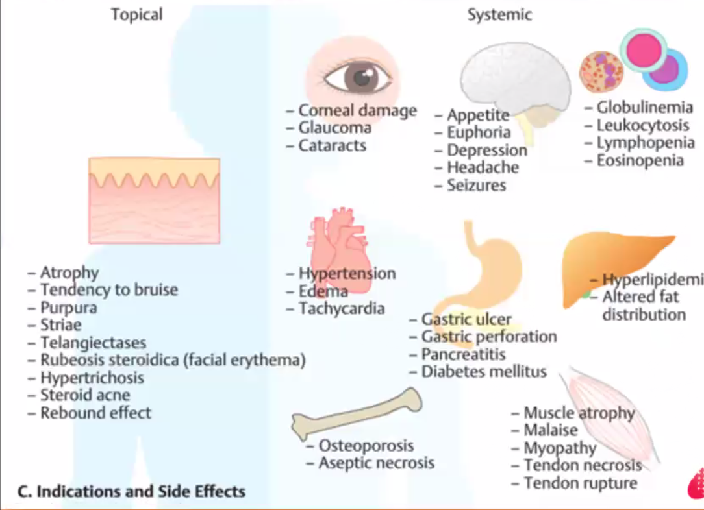

Pharmacology¶
[[TOC]]
Aspirin: tinnitus and in high doses hearing loss Thiazide (e.g. metolazone): hyponatremia and hypokalemia Sacubitril-varsartan: hyperkalemia, hypotension, cough
Question
- Cocaine heroin, these are illegal and may result in death sentence; they are reportable; what do we do?
General¶
Etymology¶
- Memorizing Pharmacology by Tony Guerra
Generic name vs. brand name
- Usually generic name has 4 or more syllabus but brand names have only 2 /3 syllabus
- Generic name has stems; brand names do not
- Getting meaning from brand name and generic name follow different rules
Three types of drug names:
- Chemical name: IUPAC standard name RS 2-(4-Isobutylphenyl)propanoic acid
- Generic name: ibuprofen
- The emphasis is often on the second to last syllabus: ibu**pro**fen
- Can indicate class: prefix, suffix, infix
- Brand or trade name: Advil, Motrin
- 2 / 3 syllabus that suggest drug function
- Easy to pronounce syllabus
- Phonetic power: T, d (tongue tip occlusion) , k, g (tongue body occlusion), p, b (lip stop), m, n (nasal occlusion)
- Suggest function
Prefix suffix infix
-
Generic drug names are invented words
-
Each prefix, suffix, infix that has meaning is a stem
e.g .-cillin is a stem, peni- is to differentiate the drug
-oxacin, quinolone
-fl-, fluoroquinolone
- -adol; a drug like tramadol (Ultram) is an analgesic comprised of opioid; tramadol is both an agonist and an antagonist
- -afil; as in sildenafil (Viagra), and tadalafil (Cialis, Adcirca) - phosphodiesterase-5 (PDE-5) inhibitor; stop breakdown of chemical in corpus cavernosum to treat erectile dysfunction
- -amavir; tamavir (tamaflu), zanamivir (Relenza), subclass of -vir, representing neuraminidase inhibitor group. This is critical for influenza reproduction.
- -azepam; anti anxiety agents in benzodiazepines;
Pronunciation and Organic Chemistry
- Number of carbon: pro in metoprolol, methyl, ethyl, butyl (albuterol)
- Chirality: Levo = left, e.g. levothyroxine; Dextro = right; dexmethylphenidate
- Chemical element: thi = sulphur atom involved, hydrochlorothiazide; chloro- = chlorine; hydro- = hydrogen (hydrocodone); -fl- = fluorine (ciprofloxacin)
- Branches attached to the central molecule:
- aceto → acet-- (levetiracetam);
- Alcohol → -ol (tramadol);
- amide (loperamide),
- amine (diphenhydramine);
- disulphide -> disul (disulfiram);
- furan -> fur (pronounced fewer, begins furosemide),
- guanidine → idine (cimetidine)
- Hydroxide → hydroxide (magnesium hydroxide)
- imidazole → azole; (omeprazole)
- Ketone → -one (spirolactone)
- phenol → phen (acetominophen)
- Sulphur → sulfa (sulfamethoxazole)
- Memorise the ways chemist use to classify drugs
- What the drugs does the patient or their therapeutic class e.g. antidepressant
- Chemical structure e.g. TCA
- Receptor they affect e.g. beta blockers
- Neurotransmitter they affect e.g. SSRI
Mnemonics
-
prilosec (omeprazole) = proton low secretion; proton pump inhibitors
-
7 physiological classes in this book: GMRINCE
-
grandmother rinse kids hair with rinse spelled in French
- G - gastrointestinal
- M - musculoskeletal
- R - respiratory
- I - immune
- N - neuro
- C - cardio
- E - endocrine systems medicines
Easiest to hardest to learn
-
Rules
-
Each of the 7 sections present OTC then RX later
- Alphabetise the drugs in the same class unless there is a pharmacological reason not to
Over the Counter Medications¶
Gastrointestinal Drugs¶
Order (Mouth to rectum, OTC then Prescribed, Class, Alphabetical) - of 13 drugs, 6 pairs, 1 single
- OTC: (acid reduction) calcium carbonate, magnesium hydroxide, famotidine, ranitidine, esomeprazole, omeprazole, (think diarrhea follows upset stomach) bismuth subsalicylate, loperamide, (now use the l to get to l for laxatives) , docusate sodium, polyethylene glycol, (use po from poly reversed as op)
- Prescription: (antiemetic) ondansetron, promethazine, (promethazine can be inserted into the colon, get to the UC medication) infliximab
Peptic Ulcer Disease¶
| Class | Action | Side Effects | Contraindications |
|---|---|---|---|
| Antacids 抗酸剂 | Acid reducers; a few minutes | Bind or chelate with antibiotics such as ciprofloxacin or doxycycline and make them ineffective | |
| H2 antagonist | Acid reducers; a few hours | ||
| PPI | Acid reducers; a few days |
| Generic N. | Brand N. | Class | Beyond class action |
|---|---|---|---|
| Calcium carbonate | Tums / Children's Pepto | Antacid | supplement calcium in diet |
| Magnesium hydroxide | Milk of magnesia | Antacid | also an laxative ('lactose intolerance diarrhea') |
| Famo**tidine** | Pepcid | H2 blocker | |
| Rani**tidine** | Zantac ('2' to anti-acid) | H2 blocker | |
| Cime**tidine** | Tagamet | H2 blocker | |
| Niza**tidine** | Axid | H2 blocker | |
| Esome**prazole** | Nexium | PPI | Es for S (left chirality); more effective then omeprazole; next after omeprazole |
| Ome**prazole** | Prilosec ('protons low secretion') | PPI | Combination of aspirin and omeprazole is available; |
Diarrhoea, Constipation, Emesis¶
-
Diarrhoea can lead to dehydration and sometimes we need to intervene using over the counter medications such as bismuth subsalicylate or loperamide.
-
Constipation originates from some medication classes such as:
-
opioids decrease stomach motility
- calcium channel blockers prevent calcium from moving into smooth muscle, slowing peristalsis
Stool softeners such as docusate sodium, or stimulate laxative for constipation caused by medications
-
Emesis is a natural body response to ingested toxins, however, with CA chemo, we want to reduce and prevent chemotherapy-induced nausea and vomiting (CINV) with a drug like ondansetron; manufacturer specially formulate these because vomiting patients may vomit oral drugs, e.g.
-
Ondansetron comes as an orally disintegrating tablet (ODT) so taking it does not require water
- Promethazine comes as a rectal repository
| Generic N. | Brand N. | Class | Beyond class action |
|---|---|---|---|
| Bismuth sub**sal**icylate | Pepto Bismal, Maalox | Anti-diarrhea | Can cause Reye's if used in children (brain and liver damage in children with chicken pox or influenza who takes salicylates); B - black tongue and black stool in some patients |
| Loperamide | Imodium | Anti-diarrhea | Lo - slow; p- peristalsis |
| Docusate sodium | Colace | Stool softener | Col - colon; ace - pace; Use with opioids like morphine; Help water penetrate into the bowel and penetrate rhythms with docusate |
| Polyethylene glycol | Miralax | Osmotic laxative | Miracle laxative; pegalated component |
| Polyethylene glycol and electrolyte | GoLytely | Osmotic laxative | Prescription only cousin of PEG; 4 Litre bottle, used before colonoscopy. Make sure there is a bathroom nearby. |
| Ondan**setron** | Zofram, Zofram ODT | Antiemetic, 5HT blocker | Ondansetron has every letter except for I; ODT form is available which can be taken without additional water. |
| Promethazine | Phenergan | Antiemetic, Antihistamine, | This is sometimes combined in liquid form with codeine. Also reduces nausea. Oral, IM, IV, Rectal suppository forms. |
GI autoimmune disorders¶
| Generic N. | Trade N. | Class | Beyond class |
|---|---|---|---|
| Inf-li-x-imab | Remicade | TNF α blocker | Li = immunomodulatory; xi= chimeric; mab = monoclonal antibody; remi - remission, ade - aid; Used to treat ulcerative colitis |
Musculoskeletal Drugs¶
26 Musculoskeletal Drugs:
3 OTC NSAIDs: aspirin, ibuprofen, naproxen
Non-narcotic analgesia: acetaminophen
Combine aspirin with acetaminophen and caffein: excedrin migraine
Migraine M and Caffeine C: meloxicam, celecoxib
Opioid schedule II: morphine, fentanyl, hydrocodone with acetaminophen, oxycodone with acetaminophen
Opioid schedule III: acetaminophen with codeine
Opioid schedule IV: Tramadol
Opioid narcotic antagonist: naloxone
Migraine agony agonists: eletriptan, sumatriptan
Rheumatoid Arthritis: (non-biologic) methotrexate, (biologic) abatacept, etanercept
Joint pain to brittle bone: alendronate, ibandronate
Move out to muscle for the relaxants: cyclobenzaprine, diazepam
Big toe gout meds: allopurinol, febuxostat
NSAIDS¶
- Both analgesic and anti-pyretic
- Ibuprofen can close patent ductus arteriosus in preemie
- Acetaminophen vs aspirin
- Acetaminophen is a non-narcotic analgesic; it DOES NOT help with inflammation; so use aspirin instead
- If patient has pain or fever, then either is appropriate
- Pregnant patient should not use NSAID and use acetaminophen instead
- For headache
- Excedrin Migraine - aspirin for antiinflammatory, acetaminophen for pain, caffeine for vasoconstriction
| Generic N. | Trade N. | Class | Beyond class |
|---|---|---|---|
| aspirin (ASA) | e-cot-rin | OTC NSAID, COX1,2 inhibitor | Taken up to 4 times daily, OTC; acetyl salicylic acid; enteric coated aspirin |
| ibu**profen** | Advil, Motrin | OTC NSAID, COX1, 2 inhibitor | Taken up to 4 times daily, OTC; |
| na*proxen* | Aleve | OTC NSAID, COX1,2 inhibitor | Taken up to 2 times daily, OTC |
| acetominophen | Tylenol | Non-narcotic OTC analgesic | para-ace**tyl**aminoph**enol**; |
| melox**icam** | Mobic | NSAID | Prescription only; longest half life, only need to be taken once a day. (Bic - big swelling) |
| cele**coxib** | Celebrex | NSAID, COX2 selective | Less GI irritation due to lack of COX 1 inhibition; celebrating relief from inflammatory conditions. |
Opioids and Narcotics¶
- Drug Enforcement Agency categorise addictive potential in medications using drug scheduling system
| Schedule | Description | Example |
|---|---|---|
| I | Illegal substances, no medical value | Heroine |
| II | Potentially addicting, | (Individual drugs) Morphine, codeine, fentanyl (combination drugs) hydrocodone with acetaminophen, or oxycodone with acetaminophen |
| III | Less addicting | Acetaminophen with codeine |
| IV | Sedative hypnotics | Zolpidem, and mixed opioid analgesics like Tramadol |
| V | Cough drugs | Guaifenesin with codeine (include codeine) |
- Opioids side effects: euphoria, respiratory depression, constipation, miosis
| Generic N. | Trade N. | Class | Beyond class |
|---|---|---|---|
| morphine | Kadian, MS Contin | opioid anagelsics | Greek god of dreams Morpheus; circadian - Kadian 24 hrs extended release version; **M**orphine **s**ulphate **con**tinuous release; |
| fentanyl | Duragesic, Sublimaze | opioid anagelsics | dosed in mcg NOT mg; duragesic patch relief for 72 hours, dura - long dura**tion, **gesic-anal**gesic**s; Sublimaze is injectable. |
| hydrocodone with acetaminophen | Vi**codin** | opioid anagelsics | |
| oxycodone with acetaminophen | Perco**cet** | opioid anagelsic and non-narcotic anagelsic | Cet- a**cet**aminophen - for mild analgesic |
| Acetaminophen with codeine | Tylenol with codeine or Tylenol 3 | non-narcotic anagelsic and opioid anagelsics | 3 in Tylenol 3 refers to the amount of codeine; Tylenol 2 has 15 mg codeine with 300 mg acetaminophen; Tylenol 3 has 30 mg codeine with 300 mg acetaminophen; Tylenol 4 has 60 mg codeine with 300 mg acetaminophen |
| Tram**adol** | Ultram | Mixed opiate agonist and antagonist | adol-mixed opioid agonist and antagonist |
- Opioid antagonist
| Generic N. | Trade N. | Class | Beyond class |
|---|---|---|---|
| **Nal**oxone | Narcan | opioid receptor antagonists | Narc- narcotic; an - antagonist; Nal in the generic name is a stem for opioid antagonist. Use in opioid overdose, and list as part of emergency medicines: LEAN lidocaine, epinephrine, atropine, and naloxone. |
Headache and Migraine¶
- NSAIDS can be used here
- Also Excedrin Migraine
- Triptans for severe migraine
- Work on receptors that reduce swelling associated with migraines
- 5-hydroxytryptamine receptors agonist -> triptans
- Use the agony of a migraine to remember that triptans are agonists
| Generic N. | Trade N. | Class | Beyond class |
|---|---|---|---|
| ele**triptan** | Relpax (rel for relieve, and pax for people) | 5HT1 receptor agonist | |
| suma**triptan** | *Im*itrex (IM form is available for patients who cannot tolerate PO, Imigran, Treximet | 5HT1 receptor agonist |
DMARDs and Rheumatoid Arteritis¶
DMARD - disease modifying anti-rheumatic drugs: slow the progression by suppressing the immune system, rather than treat, as in osteoporosis seen later.
Both rheumatoid Arteritis and osteoporosis respond to anti-inflammatories e.g. NSAID, glucocorticoids e.g. prednisone.
| Generic N. | Trade N. | Class | Beyond class |
|---|---|---|---|
| metho**trexate** | *Rheuma*trex (relieves rheumatoid arthritis) | Antimetabolites; non-biologics DMARD | Non-biologics, trexate is a stem that denotes DMARD; Worry transaminitis |
| aba**ta**-cept | Orencia | Biologics DMARD | ta - going after T cell receptors; cept - receptor molecule, either native or modified |
| eta**ner**-cept | Enbrel | biologics DMARD | Ner- Tumor **ne**c**r**osis factors |
Osteoporosis¶
- Distinguish from drugs that treat osteoarthritis - NSAID and anti-inflammatory
| Generic N. | Trade N. | Class | Beyond class |
|---|---|---|---|
| alen**dronate** | Fosamax (looks like fossil, so bone) | bisphosphonates | Weekly (bone grow slowly); do not lie down for 30 minutes |
| iban**dronate** | Boniva (bone is staring at me here) | bisphosphonates | Monthly; do not lie down for 60 minutes |
Muscle relaxants¶
- Relax muscles and reduce spasms
| Generic N. | Trade N. | Class | Beyond class |
|---|---|---|---|
| cyclobenzoprine | Flexeril, Amrix | skeletal muscle relaxants | ben-bend; flex - bend; |
| di**azepam** | *Val*ium (valerian root) | benzodiazepines | Schedule IV, classified here as a muscle relaxer |
Gout¶
- Inflammatory arthritis that can be treated with NSAIDs like ibuprofen, colchicine, right away. But we can also treat this preventatively by modifying the uric acid metabolism.
| Generic N. | Trade N. | Class | Beyond class |
|---|---|---|---|
| Allop*uri*nol | zyloprim | Anti-arthritic, anti-purine | All pure and dull joints |
| Febu**xostat** | u-lor-ic | xanthine oxidase inhibitor | Xostat- xanthine oxidase inhibitor; uloric u lower uric acid |
Respiratory Drugs¶
First generation OTC antihistamine: Diphenhydramine
Then go to second generation OTC antihistamine: cetirizine, loratadine
Add decongestant to make loratadine BTC: Loratadine + pseudoephedrine,
Then think about decongestants alone: pseudoephedrine
Then think about oral or nasal decongestant: phenylephrine
Move up to the nose for the intranasal decongestant: oxymetazolin
Stay in the nose, think OTC glucocorticoid: triamcinolone
Move from nasal congestion to chest congestion: guaifenesin + dextromethorphan
The move to behind the counter for a prescription version: guaifenesin + codeine
If that doesn't work and the cough inflames the lungs, we need oral steroids: Methylpredisolone, prednisone
After the attack, we might find that we have asthma, and need to use prophylactic measures to prevent further attacks using inhaled steroid with LABA: Budesonide + formoterol inhaler, Fluticasone + salmeterol inhaler
We can also individually use the steroid fluticasone
Or use a short acting beta2 agonist: albuterol
The beta2 agonist albuterol combined with anticholinergic ipratropium: duoneb
Or a long acting anticholinergic: tiotropium
If that doesn't work: montelukast and omalizumab;
the latter has a black box warning for anaphylaxis which many necessitate the use of :epinephrine / adrenaline.
Antihistamines and Anticongestants¶
- Difference between different antihistamines
- First generation: make patient sleepy
-
Second generation: cannot pass through BBB, less sedative effects
-
The antihistamine snowman
- H1 in the head, only a nose - H1 act in the head and nose
- H2 in the body, GERD and hyperacidity happen
- Confuse antihistamines and anticongestants
- Often combined for allergy symptoms
- When combined the name often has '-d'
- Pseudoephedrine is often BTC (behind the counter) - need id to get them
| Generic N. | Trade N. | Class | Beyond class |
|---|---|---|---|
| Chlorphenamine | 1st gen antihistamine | ||
| Diphenhydramine | *B*enadryl | 1st gen antihistamine | Use in many sleep aids, b for bbb which the drug crosses |
| Cetirizine | Zyrtec | 2nd gen antihistamine | |
| Lor**atadine** | Claritin | 2nd gen antihistamine | Clearing one from allergies |
| Lor**atadine** + pseudoephe**drine** | Claritin-D | 2nd gen antihistamine and decongestant | Helps with both runny AND stuffy noses |
| Pseudoephe**drine** | Sudafed, Nexafed, Zephrex-D | decongestant | BTC; oral |
| Phenylephrine | Neo-synephrine | decongestant | Liquid or nasal; Not as strong as pseudoephedrine |
| Oxymetazolin | Afrin (use this to relate to the other decongestations) | decongestant | Intranasal; |
Allergic Rhinitis Steroids, Anti-tussives, and mucolytics¶
- AR is an inflammation of the nose, treated with local nasal steroids
| Generic N. | Trade N. | Class | Beyond class |
|---|---|---|---|
| triamcinolone | Nasacort allergy 24 hr | nasal steroid | |
| guaifenesin + dextromethorphan | mucinex dm; robitussin dm | mucolytic and anti-tussive | OTC; think guaifenesin as mucolytic because mucus is green, starts with a 'g'. |
| guaifenesin + codeine | Robitussin Ac; cheratussin | mucolytic and opioid anti-tussive | Prescription only. Ac for 'and codeine'. |
Asthma¶
We want to treat two components
- bronchoconstriction - beta 2 receptor agonists
- inflammatory - steroids
In addition, consider anticholinergics (antagonist of Ach)
- Side effects include dry mouth and constipation
- Affect smooth muscle of the lungs to allow for bronchodilation
| Generic N. | Trade N. | Class | Beyond class |
|---|---|---|---|
| Methyl**pred**isolone | Medrol | Steroids (oral) | Oral; 6 day 21 pill pack; 6 - 5 -4 -3 -2 1- per day; taper steroids; |
| **Pred**inisone | Deltasone | Steroids (oral) | |
| Budesonide + formo**terol** inhaler | Symbicort | Steroid + LABA | Prophylactically prevent asthma; working with steroids |
| Fluticasone + salme**terol** inhaler | Advair Diskus, AirDuo RespiClick. | Steroid + LABA | Prophylactically prevent asthma; Advair = add two drugs to get air |
| Fluticasone inhaler | Flovent, Flonase | Steroid (inhaled) | Inhaler felt cold; think about flu - like refrigerant. Used with discus inhaler (with dry power) |
| Albu**terol** inhaler | Proventil HFA, Ventolin HFA, ProAir HFA | SABA | Note that terol does not distinguish between long or short acting. |
| Albu**terol** + Ipra**trop**ium inhaler | DuoNeb | SABA + short acting anti-cholinergic | |
| Tio**trop**ium | Spiriva | Anti-cholinergic | Longer acting than ipratropium; use for COPD in addition to asthma; spir- respire; |
| Monte**lukast** | Singulair | Leukotriene receptor inhibitor | Leukotriene causes bronchoconstriction to protect the lungs against foreign material; also used for COPD; Singulair - single dosing for air |
| Omalizu**mab** | Xolair | anti-IgE antibody | li immunomodulator, -zumab humanized monoclonal antibody; BLACK BOX anaphylaxis even after a year after onset of use; always have anaphylaxis treatment ready. |
Anaphylaxis¶
- Special allergic overreaction
| Generic N. | Trade N. | Class | Beyond class |
|---|---|---|---|
| epinephrine | EpiPen | hormone and neurotransmitter | Epi - above, neph-kidney - greek origin; adrenaline - latin version; |
Immune Drugs¶
- Start from antibacterial to anti fungal and antivirals
- OTC Antibacterials: neo**mycin** + polymyxin b + bacitracin, butenafine, Influenza vaccine, docosanol
- Systematic antibacterials, start with those that attack the cell walls: Amoxicillin, followed by the augmented amoxicillin + clavulanic acid
- Move to cephalosporins, in generational order: cephalexin, ceftriaxone, cefapime,
- Then alphabetically to (almost) the last, for the glycopeptide antibiotics, vancomycin for MRSA
- From bactericidal cell-wall drugs to bacteriostatic protein synthesis inhibitors, the tetracyclines: doxycycline, minocycline; followed by three macrolides in order of the number of times taken per day: azithromycin (qd), clarithromycin (bid), and erythromycin (qid);
- Use mycin ending to get to clindamycin
- And from cLINdamycin to linezolid
- Followed by the bactericidal protein synthesis inhibitors, aminoglycosides: amikacin, gentamicin
- Move to UTI medications: sulfamethoxazole-trimethoprine; ciprofloxacin and levofloxacin; from l to m in metronidazole
- 4 letter for 4 TB drugs, because over 4 mm is a positive TB test or a RIPE: rifampin, isoniazid, pyraziamide, efambutol
- TB patients often have opportunistic fungal infections, so antifungals follow in alphabetical orders: amphotericin B, fluconazole, nyastatin
- The antivirals for influenza follows: oseltamivir, zanamivir
- Then acyclovir and vanacyclovir for herpes in order of half life
- Then for RSV palivizumab
- Then for HIV, in order of attack, fusion, CCR5, reverse transcriptase, integrase, and proteinase: enfuvirtide, maraviroc, efavirenz + emtricitabine + tenofovir, ral*tegra*vir, darunavir
OTC Antimicrobials¶
- Three major classes of antimicrobials
- Anti-bacterial - bad brand name from generics
- Aminoglycoside: nephrotoxic and ototoxic when used systemically
- Anti-fungal
- Anti-viral
- Mycin and micin don't indicate a specific class; mycin may hint at antibacterial but is NOT definitive
| Generic N. | Trade N. | Class | Beyond class |
|---|---|---|---|
| neo**mycin** + polymyxin b + bacitracin | Neos-po-rin (neo**mycin **s**ulphate, **po**lymyxin, baci**t**rac**in) | Antibacterial cream, neomycin is an aminoglycoside | Neomycin is an amino glycoside |
| butenafine | Lotrimin Ultra | OTC Antifungal cream | Ring worm (tinea corporis), jork itch (tinea cruris), athlete's foot (tine pedis) |
| Influenza vaccine | Fluzone (inactivated), Flumist (nasal) | OTC prophylactic antiviral | Prophylactic; some children might need prescriptions |
| docosanol | Abreva | OTC acute antiviral | Use docosanol so you can go to the ball. Docosanol is for cold sores i.e. HSV |
Antibiotics Against Cell Walls, Bactericidal¶
- Targeting cell wall means selective for bacterial and safe for patient
- Cephalosporins are classified in generations (5 now)
- 1st generation: don't penetrate BBB; poor gram negative coverage (with extra layer of protection); and are susceptible to deactivation by beta-lactamase producing bacteria
- 3nd generation onwards: good CSF penetration, good gram negative coverage, and are not afraid of beta-lactamase producing bacteria; may lose some gram positive coverage as we move up the generation.
- 3rd generation cephalosporin antibiotics can have cross sensitivity with penicillins; patients allergic to one may be allergic to another;
| Generic N. | Trade N. | Class | Beyond class |
|---|---|---|---|
| Amoxi**cillin** | Amoxil (amp - amino penicillin) | Penicillin-type | Resistance to the pink stuff after ear infection treatment; Penicillin pop open bacterial cell wall like popping a bubble. |
| Amoxi**cillin** + clavulanic acid | *Augment*in (augments amoxicillin) | Penicillin + beta-lactamase inhibitor | To protect amoxicillin against an enzyme bacterial produces called beta-lactamase |
| **Ceph**alexin | Keflex | 1st gen cephalosporin | |
| **Cef**dinir | Omnicef | 3rd gen cephalosporin | Oral, newer generation has cef not ceph |
| **Cef**triaxone | Rocephin | 3rd gen cephalosporin | Tri for third generation. Ro - company; Le Roche. |
| **Cef**epime | Maxipime | 4th gen cephalosporin | Pime - maxipime (maximum generation) |
| Vanco***mycin*** | Vancocin | Glycopeptide antibiotics | MSSA, MRSA; Special dosing requirements for patient safety; Can cause RED MAN syndrome; mycin means it is extracted from streptomyces |
Protein Synthesis Inhibitors, Bacterial Static¶
- 4 groups under this category
- Tetracyclines
- Macrolides
- lincosamide antibiotics
- oxazolidinone
- Tetracyclines: Doxycycline and minocycline are named after the four (tetra) member chemical ring (i..e cyclines)
- Tetracyclines and fluoroquinonones both cause photosensitivity and chelation with cations such as Ca2+ in milk or antacids.
| Generic N. | Trade N. | Class | Beyond class |
|---|---|---|---|
| Doxy**cycline** | Doryx, Vibramycin | Tetracycline | |
| Mino**cycline** | Minocin | Tetracycline | |
| Azi**thromycin** | Zithromax or Z-pak | Macrolide | Double dose on the first day and then single dose the following 4 days; single dose improves compliance |
| Clari**thromycin** | *Bi*axin (2 times a day) | Macrolide | Twice a day dose; for PUD triple therapy along with amoxicillin and omeprazole |
| Ery**thromycin** | E-Mycin | Macrolide | 4 times a day - thus fallen out of favour; |
| *Cl*indamycin | Cleocin | lincosamide antibiotics | Dental prophylaxis if patient has penicillin allergy; used topically for severe acne; when use orally, it may cause pseudomembranous colitis (aka antibiotics associated diarrhea); cdad - clostridium difficule associated diarrhea |
| line**zolid** | Zyvox | Oxazolidinone antibiotics | This works in MSRA and VRE. 'Z'olid drug for solid bugs. |
Protein Synthesis Inhibitors, Bactericidal¶
- Think of aminoglyco**side** and bacteri**cid**al: as killers
- Cause nephrotoxicity and ototoxicity
| Generic N. | Trade N. | Class | Beyond class |
|---|---|---|---|
| Ami**kacin** | Amikin | aminoglycoside | May be effective against resistant organisms |
| Genta**micin** | Garamycin | aminoglycoside | Most commonly used |
| Tobramycin | Tobradex | aminoglycoside | derived from Streptomyces tenebrarius; It is especially effective against species of Pseudomonas. |
Antibiotics for UTI and PUD¶
- Fluoroquinone
- Some times called floxacins
- Can cause tendon rupture in addition to photosensitivity and chelation
| Generic N. | Trade N. | Class | Beyond class |
|---|---|---|---|
| **sulf**amethoxazole - trimethoprine (SMX-TMP) | Bactrim, Septra | Dihydrofolate reductase inhibitors | Dihydrofolate reductase help bacteria make folate. Humans can ingest folate acids so this does not affect us. This can be useful in UTI or as prophylaxis in HIV or other immunocompromised patients. Sulphur can cause allergy including SJS. |
| Cipro***fl*oxacin** | Cipro | fluoroquinone | For UTI |
| Levo***fl*oxacin** | Levaquin | fluoroquinone | Left handed (levo) isomer of oxofloxacin. |
| Metro**nidazole** | Flagyl | nitroimidazoles, antiprotozoa | This is an antiprotozoa; Gastro people use this to treat H pylori as part of triple therapy; Notable side effect include disulfiram-like reaction that presents as N/V flushing of skin, tachycardia, and SOB. Projectile vomiting is rare but a vivid way to remember the drug's adverse effect with alcohol consumption |
Anti-tuberculosis Agents¶
- Prescribe for a few months because these bugs grow slowly
- Combination therapy prevents resistance
- RIPE - for four major agents: rifampin, isoniazid, pyrazinamide, ethambutol
- Non drug resistant, non-HIV patients take all four drugs for two months, followed by isoniazid and rifampin for 4 more months
| Generic N. | Trade N. | Class | Beyond class |
|---|---|---|---|
| **Rifa**mpin | Rifadin | Anti-TB drug | First letter 'R' reminds us that the drug turns tears, urine, saliva red. |
| Isoniazid | INH | Anti-TB drug | SE: Ni for Peripheral neuritis. |
| Pyrazinamide | PZA | Anti-TB drug | SE: P for polyarthritis |
| Ethambutol | Myambutol | Anti-TB drug | SE: optic neuritis ( starts with e for eye) |
Anti-fungals¶
- Divided into topical or systemic
| Generic N. | Trade N. | Class | Beyond class |
|---|---|---|---|
| Amphotericin B | Fungizone | Anti-fungals | Can treat systemic infection; Terrible side effects - so often called amphoterrible |
| Flu**conazole** | Diflucan | Anti-fungals | Orally treat vaginal infections; flu - for fluorine atom |
| Nyastatin | Mycostatin | Anti-fungals | Eliminated thrush or yeast infections; Nystatin is power and liquid to swish and spit; |
- Amphotericin A didn't do anything;
Antivirals, non HIV¶
- Any antiviral has -vir in it
- Drugs for herpes are remembers in order of half-life
| Generic N. | Trade N. | Class | Beyond class |
|---|---|---|---|
| Oselt**amivir** | Tamiflu | Antiviral for acute or prophylaxis of influenza A and B | Works when taken within 48 hours of infection; if one person in a family is sick or immunocompromised, all will get it; |
| Zan**amivir** | Relenza | Antiviral for influenza A and B | Works when taken within 48 hours of infection; This comes in a dishaler ; Relenza represses influenza virus. |
| A**cyclovir** | Zovirax | Antiviral for Herpes | Help prevent recurrent and treat but do not cure; 5 times daily. |
| Vala**cyclovir** | Valtrex | Antiviral for Herpes | Help prevent recurrent and treat but do not cure; A prodrug, turns into acyclovir in the body; allows 3 times daily dosing for patient compliance. NOT available in Singapore ED. |
| Fami**ciclovir** | Famvir | Antiviral for herpes | Allows 2 times dosing |
| Pali**vizumab** | Synagis | Prophylatic for RSV | RSV is usually not a problem in adults but in infants it can be deadly; target RSV protein F; vi- antiviral, zu - humanised, mab - monoclonal antibody |
Antivirals, HIV¶
- 5 classes of HIV drugs in the order of how a virus targets a cell
- Tries to fuse with the cell
- Use cellular chemokine receptor 5 CCR-5 to enter the cell
- Inside the cell it use reverse transcriptase, integrase, then protease
- These drugs have three letter abbreviations
| Generic N. | Trade N. | Class | Beyond class |
|---|---|---|---|
| enfu**vir**tide (INN) | Fuzeon | fusion inhibitor | |
| mara**vir**oc (MVC) | Selzentry | CCR5 antagonist | A rock guarding virus entry |
| efa**vir**enz + emtri**citabine** + tenofo**vir** | Atripla | non-nucleoside reverse transcriptase inhibitors (NNRTi), 2 x nucleoside/nucleotide reverse transcriptase inhibitors (NRTi) | |
| ral***tegra*****vir** | Isentress | integrase strand transfer inhibitor | |
| daru***na*vir** | Prezista | protease inhibitor | Pr- for protease |
Insecticide and Anti-parasitic¶
| Generic N. | Trade N. | Class | Beyond class |
|---|---|---|---|
| permethrin | Pyrethrins, insecticide | paralyzing and killing the mites and their eggs | |
| ivermectin | Anti-parasitic | Oral for scabies |
IVIGs¶
| Generic N. | Trade N. | Class | Beyond class |
|---|---|---|---|
Neurological Drugs¶
- 4 neuro OTC drugs are local anaesthetics benzocaine and lidocaine which are ester and amide respectively, meclizine for dizziness, and acetaminophen PM for insomnia
- Connect this with benzodiazepine-like sedative hypnotics: eszopiclone and zolpidem, and melatonin receptor antagonist ramelteon
- No sleep, means depression, the 5 SSRI antidepressants: citalopram, escitalopram, sertraline, (followed by three oxetines) fluoxetine, and paroxetine the SSRI and duloxetine the SNRI
- Venlafaxine, Then followed in order of safety, the TCA amitriptyline, and the MAOi, isocarboxazid
- From depression move to smoking: bupropion, and varenicline
- Smoking when anxious, so 2 azolams and azepams: alprazolam, midazolam, clonazepam, lorazepam
- From the A in anxious to A in ADHD, go from stimulants to non stimulants: dexmethylphenidate, methylphenidate, atomoxetine
- From mo in atomoxetine to mood in mood stabiliser: lithium
- Then L in lithium to Low potency typical antipsychotic chlorpromazine, to high potency typical antipsychotic haloperidol
- Peridol to peridone: second generation antipsychotic risperidone, and quetiapine
- Pine to traditional anti-epileptic: carbamazepine, divalproex, phenytoin
- To 2 newer anti-epileptics: gabapentin, pregabalin
- From epileptic motion to Parkinsonian motion: levodopa with carbidopa, and selegiline
- To thinking of senility, that memory is done: Memantine to donepezil
- End with a d for dizzy: scopolamine
Local anaesthetics and anti-vertigo¶
- There are two major classes of local anaesthetics
- These drugs directly stop axonal conduction; while most other neuro drugs work on the neurotransmitters
- Named after molecules in their structures: ester and amides
- Ester local anaesthetics like benzocaine are put in topical agents because if we give ester medication by injection, they are more allergenic or they cause more allergy reactions
- No longer any injectable ester-type local anaesthetic products available in Canada
- Amides are less allergenic, therefore patients have less issue when we inject the amide type local anaesthetics e.g. lidocaine (part of )
- Cocaine is a local anesthetic
- Lidocaine Allergy
- Even though lidocaine is not thought to be cross-reactive with other amides based anesthetics on skin tests, there has been documentation of positive cross-reactivity of a lidocaine allergy with mepivicaine and ropivacaine, but not bupivacaine.
- Redfern DC. Contact sensitivity to multiple local anesthetics. J Allergy Clin Immunol*.* 1999 Oct;104(4 Pt 1):890-1.
- It is even less common for cross-reactivity of a lidocaine allergy with ester-based local anesthetics, specifically chlorprocaine.
| Generic N. | Trade N. | Class | Beyond class |
|---|---|---|---|
| Benzo**caine** | Anbesol (nb - for numb aching tooth) | Local anaesthetic, ester type | |
| Chloropro**caine** | Local anaesthetic, ester type | ||
| Co**caine** | Local anaesthetic, ester type | ||
| Pro**caine** | Local anaesthetic, ester type | ||
| Propara**caine** | Local anaesthetic, ester type | ||
| Tetra**caine** | Local anaesthetic, ester type | ||
| Arti**caine** | Local anaesthetic, amide type | ||
| Bupiva**caine** | Marcaine | Local anaesthetic, amide type | Long acting, usually used in spinal block or epidural |
| Dibu**caine** | Local anaesthetic, amide type | ||
| Etido**caine** | Local anaesthetic, amide type | ||
| Levobupiva**caine** | Local anaesthetic, amide type | ||
| Lido**caine** | Lidamantle, Xylocaine | Local anaesthetic, amide type | Injectable and patch form are available; 3 mg/kg lidocaine is the does |
| Lido**caine** with aloe vera | Solarcaine | Local anaesthetic, amide type | OTC to treat sunburns |
| Lido**caine** with prilo**caine** | EMLA cream 5% | Local anaesthetic, amide type | Used on normal, unbroken skin or on the outer genital area to prevent pain before certain procedures such as inserting a needle, skin grafts, or skin laser surgery. It works by temporarily numbing the skin and surrounding area. But needs 30 minutes. Skin goes red. Might decrease the chance of an easy plug. EMLA cream is effective for 1 cm. |
| Mepiva**caine** | Local anaesthetic, amide type | ||
| Prilo**caine** | Local anaesthetic, amide type | ||
| Ropiva**caine** | Local anaesthetic, amide type |
Sedative Hypnotics¶
- We can help patients save money by helping them understand generics
- Generics are not as colourful and flashy so a regular patient may not be able to find or trust it
- Brand name products are often placed on the left on the pharmacy shelf by convention.
- Brand names are easier to say than generic drug
- Oral benzodiazepines can also have hypnotic functions, but are discussed later because they have other functions too.
| Generic N. | Trade N. | Class | Beyond class |
|---|---|---|---|
| Acetaminophen with diphenhydramine | Tylenol PM | Non-narcotic analgesic with sedative hypnotic | Common to combine two drugs; Two phens when you want to sleep |
| Eszopi**clone** | Lunesta | Benzo-like sedative hypnotic | Lunesta - rest under the moon |
| Zol**pidem** | Ambien | Bento-like sedative hypnotic | Create an ambient or tranquil environment; only works for DFA |
| Zolpidem controlled release | Ambien CR | Bento-like sedative hypnotic | Works for people who have problem maintaining sleep (DMS) and those who have problem falling asleep (DFA) |
| Ra**melteon** | Rozerem | Melatonin receptor agonist sedative hypnotic | Helps REM sleep; Mel-remind mellow and Mel-atonin; |
Anti-depressants¶
- There are four anti-depressant classes
- SSRI: selective serotonin reuptake inhibitor
- SNRI: serotonine epinephrine reuptake inhibitors
- TCA: tricyclic antidepressants
- MAOi: monoamine oxidase inhibitors
| Generic N. | Trade N. | Class | Beyond class |
|---|---|---|---|
| Citalopram | Celexa | SSRI antidepressant | Some ssris are also used for anxiety, so think of celexa as close to relax |
| Escitalopram | Lexapro | SSRI antidepressant | Pro - like an upgrade to the citalopram (original antidepressant) |
| Ser**traline** | Zoloft | SSRI antidepressant | Lofting an depressed patient's mood |
| Flu**oxetine** | Prozac, Sarafem | SSRI antidepressant | This is the first SSRI to make it to market; be careful about the stem as it appears in SNRI duloxetine and ADHD med atemoxtine, so be careful of this stem. When it gained a new indication for premenstrual disorder, it is branded as Sarafem - Sara feminine. |
| Par**oxetine** | Paxil, Paxil CR, Pexeva | SSRI antidepressant | Controlled release version should be easier on the initial side effects |
| desvenla**faxine** | Pristiq | SNRI antidepressant | |
| dul**oxetine** | Cymbalta | SNRI antidepressant | Think 'duo' - for two types of neurotransmitter; picture a happy tall cymbal player to remember Cymbalta elevates mood |
| Levomilnacipran | Fetzima | SNRI antidepressant | |
| venla**faxine** | Effexor XR | SNRI antidepressant | |
| ami**triptyline** | Elavil | TCA | Trips up depression; elevating patient's mood |
| clomipramine | anafranil | TCA | |
| desipramine | Norpramin | TCA | |
| doxepin | Sinequan | TCA | |
| Imipramine | Tofranil | TCA | |
| Nortriptyline | Pamelor | TCA | |
| Protriptyline | Vivactil | TCA | |
| Trimipramine | Surmontil | TCA | |
| Phenelzine | Nardil | MOAi | |
| Tranylcypromine | Parnate | MOAi | |
| Isocarboxazid | Marplan | MOAi |
Smoking Cessation¶
| Generic N. | Trade N. | Class | Beyond class |
|---|---|---|---|
| Bupropion | Wellbutrin, Zyban | Smoking cessation aid | Risk of lowering seizure threshold; this used to an atypical anti-depressant |
| Vare**nicline** | Chantix, Champix | Smoking cessation aid | I am very inclined to quit when I use varenicline. My chant is I don't need my fix with chantix. |
Benzodiazepine¶
- Get name from chemical structure
- Replaced barbiturates as sleeping aid because barbiturates have a higher risk of resulting in respiration depression and death (barbs puncture lungs)
- Note that lam or pam are not real stems!
| Generic N. | Trade N. | Class | Beyond class |
|---|---|---|---|
| Alpr**azolam** | Xanax | Benzodiazepine | Alprazolam has one z and benzo has 2, Xanax sounds like a z to help you get a snooze and it helps with anxiety too. |
| Mid**azolam** | Versed | Benzodiazepine | Causes antegrad amnesia - inability to form future memories; I can't remember the verse you just said, for Versed |
| Clon**azepam** | Klonopin | Benzodiazepine | |
| Lor**azepam** | Ativan | Benzodiazepine |
ADHD medications¶
- These medications calm the mind without sedative effects
| Generic N. | Trade N. | Class | Beyond class |
|---|---|---|---|
| Dexmethylphenidate | Focalin | ADHD Stimulant | Dex-rotate plane polarised light to the right (as opposed to the levo -rotate to the left); these are more effective, last longer, and have less side effects than methylphenidate. DEA schedule II. F - following de in dex. Focalin help patient focus. |
| Methylphenidate | Concerta, Ritalin | ADHD Stimulant | Concerta can help a patient concentrate. This is amphetamine. Long acting, only need to take it once a day. |
| Atom**oxetine** | Strattera | Non-stimulant ADHD medication | No potential for abuse, it has no DEA schedule. Str- straighten, att - attention. |
Bipolar disorder¶
- Mood stabilisers like lithium are especially like to cause electrolyte imbalances.
- Li is in the same group as Na in periodic table, alkaline metal
- What happens to Na will happen Li; causing a sub-therapeutic or toxic state if too much or too little Li is secreted.
- Need to use other drugs to control the symptoms until lithium level is correct
| Generic N. | Trade N. | Class | Beyond class |
|---|---|---|---|
| Lithium | Eskalith, Lithobid | Simple salt mood stabiliser | Where the salt go, the Li go; BID dosing |
Schizophrenia¶
- Group medications into typical (first gen) or atypical (second generation)
- Important because the side effect profile is different
- Also treats different symptoms
- Further divide the first generation into low potency and high potency
- Typical antipsychotics have similar effects but different side effect profiles
- Low potency have more sedation, less extra-pyramidal symptoms
- High potency cause more extra-pyramidal symptoms (i..e movement disorders a/w antipsychotics), but less sedations
- Used for positive symptoms: delusions, hallucinations, and paranoia
- Atypical antipsychotics cause less EPS, but more metabolic effects like weight gain, diabetes, hyperlipidemia
- These work for positive symptoms
- Also work for negative symptoms: poor motivation, and emotional and social withdrawal
| Generic N. | Trade N. | Class | Beyond class |
|---|---|---|---|
| Chlorpromazine | Thorazine, Largactil | typical low potency antipsychotic | First antipsychotic! Thor is a mythical god, think of it as him helping psychotic people |
| Halo**peridol** | Haldol | typical high potency antipsychotic | Think of halo as the halo that sits high on an angel's head for high potency |
| Ris**peridone** | Risperdal | Atypical antipsychotics | |
| Que**tiapine** | Seroquel | Atypical antipsychotics | Quieting the voices. |
Anti-epileptics¶
- Old and newer drugs; try different drugs until one drug relieve the symptoms
- AEDs can exert their antiepileptic effect via the inhibition of excitatory neurotransmitter systems or the enhancement of inhibitory neurotransmitter systems. Some AEDs have multiple mechanisms
- In excitatory neurotransmitter systems, phenytoin, carbamazepine, valproate, lamotrigine, felbamate, topiramate, and zonisamide involve voltage-gated sodium channels
- Lacosamide acts on voltage-gated sodium channels and is unique in the slow inactivation of sodium channels.
- Topiramate and zonisamide also have an effect on high-voltage calcium channels.
- Pregabalin and gabapentin bind to the α2δ subunit of voltage-gated calcium channels.
- Levetiracetam has a unique mechanism, as it binds to the SV2A protein of synaptic vesicles, which functions in synaptic modulation.
- Topiramate and perampanel may have an effect on kainate receptors and on the AMPA receptor, respectively.
- In the inhibitory system,
- barbiturate and benzodiazepine bind directly to the GABA receptor, which hyperpolarizes cell membranes by opening chloride channels.
- Tiagabin inhibits GABA reuptake in the presynaptic membrane, which leads to the accumulation of GABA in the synaptic cleft.
- The same effect can be achieved by vigabatrin, by binding irreversibly to GABA transaminase (which metabolizes GABA).
- The long-term effects of old AEDs are another issue with this type of drug. Old AEDs, especially those with enzyme-inducing effects, have a negative impact on bone metabolism.22 The use of old AEDs is associated with reduced bone density and increased risk of fracture. New AEDs without enzyme-inducing effects would be relatively safe in this context.
- Long-term treatment with old AEDs has been associated with metabolic changes that lead to an increased risk of atherosclerosis in patients with epilepsy.23 Patients who were receiving long-term monotherapy with carbamazepine, phenytoin, or valproate exhibited altered circulatory markers of vascular risk, which was significantly associated with the duration of epilepsy. The effect of new AEDs should be evaluated regarding this matter. It was documented that treatment with new AEDs, such as levetiracetam, oxcarbazepine, and top-iramate, increased the level of low-density lipoprotein, homocysteine, and apolipoprotein B.
- Patients with epilepsy, especially elderly ones, exhibit a high frequency of concomitant diseases, such as vascular, cardiac, and cognitive disorders. These patients usually take various drugs to treat the concomitant diseases. Even healthy elderly subjects are likely to take many drugs. New AEDs without drug interactions are suitable for the treatment of patients with epilepsy who have concomitant diseases.
| Generic N. | Trade N. | Class | Beyond class |
|---|---|---|---|
| carbamaze**pine** | Tegretol, Tegretol XR, Carbatol | Old anti-epileptic | Pine means that the chemical has three rings; |
| divalproex | Depakote | Old anti-epileptic | |
| mysoline | Primidon | Old anti-epileptic | |
| phenobarbital | Old anti-epileptic | ||
| pheny**toin** | dilantin, phenytek | Old anti-epileptics | |
| Valproic acid | |||
| Felbamate | Felbatol | Rarely used because of potential side effects | |
| **gab**apentin | Neurontin | Newer anti-epileptics | This is a new (neu) drug; does not affect GABA receptors! |
| Lamotrigine | Lamictal | ||
| Topiramate | Topamax | ||
| Tiagabine | Gabatril | ||
| Oxcarbazepine | Trileptal | ||
| pre**gab**alin | Lyrica | Newer anti-epileptics | This is a new (neu) drug; does not affect GABA receptors! |
| leveti**racetam** | Keppra | Racetam anticonvulsant | |
| zonisamid | Zonegran |
Monotherapy Comparisons
-
The SANAD trial was designed in an unblinded, randomized fashion to evaluate the effectiveness of carbamazepine, gabapentin, lamotrigine, oxcarbazepine, or topiramate in the treatment of partial epilepsy. The comparison parameters were
-
time to treatment failure, which was defined as the discontinuation of randomized drugs because of either inadequate seizure control or intolerable side effects.
- Time to treatment failure represented the retention rate. The retention rate encompassed the efficacy, tolerability, and quality of life
- regarding time to treatment failure, lamotrigine was significantly better than carbamazepine, gabapentin, and topiramate, and exhibited a nonsignificant advantage compared with oxcarbazepine
- Another parameter was time to 1-year seizure remission.
- Regarding time to 1-year remission, carbamazepine was significantly better than gabapentin, but exhibited a nonsignificant advantage against lamotrigine, topiramate, and oxcarbazepine
Even though some new AEDs yielded a better retention rate, they failed to show better efficacy than old AEDs.
-
SANAD trial, the effectiveness of valproate, lamotrigine, or topiramate to treat generalized and unclassified epilepsy
-
time to treatment failure: valproate ≈ lamotrigine >> topiramate
- 1 year remission: valproate ≈ topiramate >> lamotrigine
treatment of generalized or unclassified epilepsy, new AEDs also failed to show better efficacy than old AEDs
-
efficacy of levetiracetam and controlled-release carbamazepine (carbamazepine CR) in patients with newly diagnosed epilepsy (Brodie et al)
-
6-month seizure-freedom rate: levetiracetam ≈ carbamazepine CR
- Time to withdrawal: levetiracetam ≈ carbamazepine CR
-
Adverse events: levetiracetam ≈> carbamazepine CR
-
KOMET study: compare the efficacy of carbamazepine CR and extended-release sodium valproate (val-proate ER), as well as levetiracetam in patients with newly diagnosed epilepsy
-
A two-parallel-group, stratified trial
- If the physician thought that valproate ER was the best treatment, the patients were randomized into treatment with valproate ER or levetiracetam.
- When the physician regarded carbamazepine CR as the best choice, the patients in this stratum were randomized into levetiracetam or car-bamazepine CR arms.
- Outcomes
- Time to treatment withdrawal: levetiracetam ≈ carbamazepine CR ≈ valproate ER
- Time to first seizure: levetiracetam ≈ carbamazepine CR ≈ valproate ER
Combination Therapy Comparisons
Combination therapies are used in 30% patients who do not respond well to AEDs. When combining AEDs, many important factors should be considered, including efficacy, adverse effects, spectrums, PK drug interactions, PD interactions, titration speed, and speed of action onset of AEDs.
-
Synergism in animals: oxcarbazepine plus levetiracetam or lamotrigine plus valproate may have
-
Some combinations of AEDs sometimes exacerbate adverse events. The combination of two sodium-channel blockers can increase neurotoxic adverse events, such as dizziness, diplopia, or ataxia.
-
Different metabolism: For the new epileptic drugs

- Lacosamide is partially metabolized by the liver (CYP2C19) and 40% of it is excreted in the urine as an unchanged form (no drug interaction).
- Oxcarbazepine (OXC) is a weaker activator of microsomal enzyme systems compared with carbamazepine.
- Topiramate (TPM) is metabolized in the liver minimally and is excreted renally largely unchanged.
- Zonisamide (ZNS) is a substrate of CYP, but has no effect on other drugs.
- Rufinamide undergoes hydrolytic metabolism and is excreted renally. It induces the CYP enzyme system modestly. GBP, gabapentin; VGB, vigabatrin.
Parkinson, Alzheimers, and Vertigo¶
- Parkinson needs dopamine; Alzheimer needs Ach;
| Generic N. | Trade N. | Class | Beyond class |
|---|---|---|---|
| levo**dopa** + carbi**dopa** | Atamet, Sinemet | anti-Parkinsons | Dopa - for dopamine; carbidopa release the breakdown of levodopa in the periphery so more is available in the CNS |
| sele**giline** | Elderly, Selgene, Apo-Selegiline | MAO-B anti-parkinsons | This is NOT a AD medication; |
| *mem*antine | Namenda XR, Namenda | NMDA Antagonistsfor Alzheimers | Mem for memory; mending the brain |
| done**pezil** | Aricept | piperidine derivative acetylcholinesterase inhibitor | Aricept improves perception; |
Dizziness¶
| Generic N. | Trade N. | Class | Beyond class |
|---|---|---|---|
| Meclizine | Antivert, Dramamine | Anti-vertigo | |
| scopolamine | transferm-scop | anti-vertigo | patch unlike meclizine, which is oral |
Cardiology Drugs¶
- O of cardio: omega-3-acid ethyl ester, to niacin, to low dose aspirin, once need to take before the niacin to prevent flushing
- Flushing, the diuretics, in order of where they act: mannitol, furosemide, hydrochlorothiazide, hydrochlorothiazide with triamterene, spironolactone
- potassium sparing to potassium replacement: potassium chloride
- 2 alphas: alpha 1 doxazosin, alpha 2 clonidine
- 2 betas: first generation non selective propranolol; second generation β1 only atenolol, metoprolol tartrate short acting, to metoprolol succinate long acting, to third generation, carvedilol
- Dil to pril, the ACE inhibitors: enalapril, lisinopril,
- ARBs with lov: Iosartan, olmesartan, valsartan
- From sartan to CCBs, nondihydropyridines diltiazem, verapamil; dihydropyridines amlodipines, nifedipine vasodilation only
- CCBS to nitroglycerin a vasodilator: nitroglycerin
- Nitrostat to statins: atorvastatin, rosuvastatin
- LDL to lower triglycerides: fenofibrates
- Fibs, children tale to parents, parenteral enoxaparin and heparin
- Parin to farin: warfarin
- Enteral anticoagulant with dabigatran
- Antiplatelets clopidogrel
- Squeeze cl together for d; d for digoxin, for CHF, and atropine to prevent a bradycardic mess
Cardio to Joy
O-l-o-l pril and sartan
Beta blocker ace inhibitor and ARBs are
Aspirin and clopidogrel both block platelet around the stent
Warfarin and heparin are both anticoagulants
Statin for lower cholesterol
Dig keep your heart from failing
Verapamil, amlodipine both block calcium channels
OTC Anti-hyperlipidemics 抗高血脂药 and Anti-platelets¶
- Aspirin 81 mg antiplatelets, reduce the change of heart attack
| Generic N. | Trade N. | Class | Beyond class |
|---|---|---|---|
| Omega-3 acid ethyl ester | Lovaza (prescription), fish oil | Anti-hyperlipidemic | |
| Niacin | Niaspan | Vitamin B3 anti-hyperlipidemic | Cause facial-flushing, that aspirin 30 minutes before treatment prevents; Reduce cholesterol level |
| Aspirin | Ecotrin (81 mg) | OTC antiplatelet | Low dose, 75 - 150 mg; low dose is not for analgesia or fever reduction, it just prevent platelets from sticking. |
Diuretic 利尿药¶
5 Structures of the nephron
- Glomerulus
- Proximal convoluted tubule : osmotic diuretics work here
- Loop of Henle: loop diuretics
- Distal convoluted tubule: thiazides
- Collecting duct: potassium sparing diuretics
Think of a water fall, more water at glomerulus and little at the collecting duct; this the order of how effect various diuretics are at diuresis.
| Generic N. | Trade N. | Class | Beyond class |
|---|---|---|---|
| mannitol | Osmitrol | Osmotic diuretic | Lower ICP in emergency to reduce cerebral edema; Bruce lee died this way |
| furo**semide** | Lasix | Loop diuretics | I have to pee furiously; lassie indicate that it last 6 hours. |
| hydrochloro**thiazide** | Microzide | Thiazide diuretics | Don't produce as much diuresis as furosemide, but good for initial treatment for HTN. |
| Triamterene and hydrochlorothiazide | Dyazide | K-sparing with thiazide diuretics | These keep potassium level in balance while producing modest diuresis |
| triamterene | Dyrenium | K-sparing diuretics | |
| Spironolactone | Aldactone | K-sparing diuretics | Can cause gynecomastia; Lactone - last one - collecting duct; block aldosterone so aldactone |
| Potassium chloride | KDur | Electrolyte replacement | Supplement used when k-sparing diuretics is contraindicated or if there is hypokalemia; Dur is for long duration |
The Alphas and Betas¶
- We need to break up the terms alpha- adrenergic antagonist and beta-adrenergic antagonist
- The alpha or beta: first two Greek alphabets
- The adrenergic: adrenal glands, ad the kidney, geric is Greek for works like
- Antagonist: works in the opposites
- We do not pigeon hole these by function because alpha and beta antagonists are very versatile.
- Beta 1 concentrate in the heart, we have 1 heart; beta 2 concentrate in the lungs, we have 2 lungs. They are also elsewhere but for a start it is useful to think in this way.
- First generation or non-selective beta blockers affect both beta 1 and beta 2 resulting in desired lowering of heart rate and undesired bronchoconstriction. Be careful about using these in asthmatic patients.
- Remember with Edgar Allan Poe's short story, the tell tale heart (1843)
- A man murders another and hides him in the wall
- When the police comes, the murderer thinks he heard the murdered man's heart and owns up to the crime; however it is only his own tachycardiac heart that he heard
- If he had taken a beta adrenergic antagonist he might have done better
| Generic N. | Trade N. | Class | Beyond class |
|---|---|---|---|
| Dox**azosin** | Cardura | α1 antagonist | HTN, BPH; causes vasoconstriction; |
| Clonadine | Catapres | α2 agonist | Works in brain to reduce by affecting α2 receptors to reduce peripheral vascular resistance. Catalyse blood pressure. Also used in ADHD as single therapy or in combination with methylprednisolone (concerts). |
| Propran**olol** | Inderal | Beta-adrenergic antagonist; first gen, not selective | Stage fright, HTN, angina pectoris, CHF, migraine; Can cause bronchoconstriction, avoid in asthma patient. |
| Aten**olol** | Tenormin | β1 selective antagonist, second generation | |
| Metopr**olol** tartrate | Lopressor | β1 selective antagonist, second generation | Preferred for blood pressure control because it just selects for the heart. However, the body will compensate for the reduction in blood pressure by vasoconstriction. Short acting. |
| Metopr**olol** succinate | Toprol-XL | β1 selective antagonist, second generation | Long acting than metoprolol tartrate. |
| Carve**dil**ol | Coreg | 3rd generation beta-blocker, Non-beta selective, vasodilation | Best choice because it has vasodilation effect to counteract the vasoconstriction, as well as cardiac effects to lower BP as in the second generation drugs. Coreg- regulates coronary function. |
Renin-angiotensin-aldosterone system drugs¶
- RAAS controls blood pressure
- Renin - comes from renal, converts angiotensinogen to angiotensin I
- ACE - converts angiotensin I to angiotensin II; angiotensin II is a potent vasoconstriction for increasing BP
- Aldosterone increases retention of sodium and water to further increase BP.
- Two major classes of RAAS drugs: ACEi, ARB
| Generic N. | Trade N. | Class | Beyond class |
|---|---|---|---|
| benaze**pril** | Lotensin | ACEi | |
| capto**pril** | Capoten | ACEi | |
| enala**pril** | Vasotec | ACEi | Patients take this orally or IV. |
| fosino**pril** | Monopril | ACEi | |
| lisino**pril** | Prinivil, Zestril | ACEi | |
| perindo**pril** | Aceon | ACEi | |
| quina**pril** | Accupril | ACEi | |
| rami**pril** | Altace | ACEi | |
| trandola**pril** | Mavik | ACEi | |
| cande**sartan** | Atacand | ARB | |
| epro**sartan** | Tevetan | ARB | |
| irbe**sartan** | Avapro | ARB | |
| Io**sartan** | Cozaar | ARB | Cozaar looks like it has raas backwards with z replacing the s. |
| olme**sartan** | Benicar | ARB | |
| telmi**sartan** | Micardis | ARB | |
| val**sartan** | Diovan | ARB | Diovan has van which is the generic name |
Calcium Channel Blockers¶
- Calcium channel blockers are vasodilators
- There are two major classes of calcium channel blockers
- Non-dihydropyridine: directly affect the heart and can act as anti-dysarrhythmias
- Dihydropyridine: only vasodilate
| Generic N. | Trade N. | Class | Beyond class |
|---|---|---|---|
| diltiazem | Cardizema | Non-dihydropyridine | |
| vera**pamil** | Isoptina, Calan | Non-dihydropyridine | Associated with constipation. |
| amlo**dipine** | Norvasc | dihydropyridine | Nor - normalises; Vas - vasculature |
| nife**dipine** | Procardia | dihydropyridine | To prevent uterine contractions, use this. Vasodilates without affecting the heart of the mother and foetus. Procardia promotes cardiac health |
Vasodilator¶
| Generic N. | Trade N. | Class | Beyond class |
|---|---|---|---|
| **nitro**glycerin | Nitrostat | nitrates | Converts to nitric oxide, the actual vasodilator, so make sure the patient sits when taking the meds because it causes significant dizziness. It is used in the management of angina pectoris. |
Anti-hyperlipidemics¶
Medications for elevated cholesterol fall into several categories
- Statin+ / HMG-CoA Reductase Inhibitors - stem is vastatin not just statin to avoid confusion with nystatin, an antifungal
- Use HMG to remember side effects: hepatitis, myositis, gestation
- Fibrates / fibric acid derivatives lowers triglycerides
| Generic N. | Trade N. | Class | Beyond class |
|---|---|---|---|
| ato**vastatin** | Lipitor | statin | Lower LDL |
| rosu**vastatin** | Crestor | statin | Crestor decreases chloesterol; |
| feno**fibrate** | Tricor | fibrate | Oral; Tri from triglycerides, cor - coronary |
Anticoagulants and antiplatelets¶
- Anti-coagulants affect clotting factors to reduce thrombosis
- Platelets stop bleeding by creating clots; however, patients with high cholesterol may have plaques that makes the clot more likely to form in dangerous places; anti platelets reduce the stickiness of platelets in high pressure vessels i.e. arteries, to prevent ensuing heart attack or stroke.
| Generic N. | Trade N. | Class | Beyond class |
|---|---|---|---|
| He**parin** | Heparin | Anticoagulant | Injectable; affect veins (blood is slow moving); primary adverse effect of bleeding. |
| Enoxa**parin** | Lovenox | Anticoagulant | Injectable; affect veins (blood is slow moving); more expensive, but can be used at home. Also used as a bridge therapy in patients starting warfarin therapy. LMWH - lo in lovenox. |
| War**farin** | Coumadin | Anticoagulant | Oral; affect veins (blood is slow moving); bleeding happens in warfare, significant side effect of warfarin; requires INR monitoring. INR happens to be the last three letters of warfarin. |
| Dabi**gatran** | Pradaxa | Anticoagulant | Oral; but does not require monitoring blood tests like warfarin and heparin. Last three letters: Not being INR |
| Acetylsalicylic | Aspirin | Antiplatelet | |
| Clopido**grel** | Plavix | Antiplatelet | Vex the platelets to keep the blood thin |
| Prasu**grel** | Effient | Antiplatelet | |
| Tica**grel**or | Brilinta | Antiplatelet |
| Generic N. | Trade N. | Class | Beyond class |
|---|---|---|---|
| Transxemic Acid |
Cardioglycoside and Anticholinergics¶
- Cardioglycoside
- increases the forces of contraction of the heart = positive inotropic
- antidysrhymia, changes electrochemistry of the heart
- Anticholinergics results in bradycardia
- Anticholinergic effect fall into the general category of dry
- Use the mnemonic: anticholinergics ABDUCT water: anhidrosis, blurry vision due to dry eyes, dry mouth, urinary retention, constipation, tachycardia
- Use this moment to also remember that cholinergic effect is wet effects: sweating, lacrimation, watery eyes, hyper salivation, urinary incontinence, diarrhea, and bradycardia
| Generic N. | Trade N. | Class | Beyond class |
|---|---|---|---|
| digoxin | Lanoxin | cardioglycoside | From digitalis lanata; digitalis is something like hands, and lanata is wooly; digoxin keeps the heart rocking |
| digitoxin | cardioglycoside | ||
| digitonin | cardioglycoside | ||
| a**tropine** | atropen | anticholinergics | Injection. Used to prevent / treat bradycardia, used in cholinergic poisoning. |
Endocrine Drugs and Misc¶
Question
- In Singapore, can patients get insulin OTC?
- Insulin needs to be kept in the fridge for stability
Diabetic Medications¶
- 3 types of DM
- Juvenile-onset (type I)
- Adult (type II)
- Gestational
- Almost oral drugs have 'glu' or 'gl' in their name
Insulins¶
- Insulin is secreted by beta cells in the islet cells
- Ultra-short acting, think listo listo (spanish) - zipline, you ready, I ready
| Generic N. | Trade N. | Class | Timing | Beyond class |
|---|---|---|---|---|
| Insulin lispro | Humalog | insulin | O: 15 min, D: 3 - 5 hrs | Ultra-short acting insulin |
| Insulin | Humulin R | insulin | O: 30-45 min, D: 12 hrs | Short acting insulin |
| NPH insulin | Humulin N | insulin | O: 3 hr, 18 hrs | Intermediate acting insulin |
| Insulin glargine | Lantus, Toujeo | insulin | O: 3 hr, 24 hr | Long acting insulins, glaring / larking - someone slowly creeping around. Lantus last all night long, take it can your life is prolonged |
Oral hypoglycemics¶
- Remember in alphabetical order of the class
- 1st generation sulphonylurea is totally surpassed by 2nd gen, we don't use them anymore
| Generic N. | Trade N. | Class | Beyond class |
|---|---|---|---|
| met**formin** | Glucophage | biguanide | |
| sita**gliptin** | Januvia | dipeptidyl peptidase-4 inhibitors | Think sugar in lipton tea |
| **gli**pizide | Glucotrol | sulphonylureas | |
| **gly**buride | Diabeta | sulphonylureas |
Antihypoglycemic¶
| Generic N. | Trade N. | Class | Beyond class |
|---|---|---|---|
| glucagon | GlucaGen | Hormone | Glucagen - glucose generator |
Thyroid Conditions¶
- Thyroid hormone stimulants heart, metabolism, and helps with growth;
Thyroid hormone¶
| Generic N. | Trade N. | Class | Beyond class |
|---|---|---|---|
| levothyroxine | Synthroid | Hormone |
Anti-thyroid¶
- Hyperthyroid person uses energy too quickly
- Thio suggest sulphur item but thyroid, but is useful for remembering
| Generic N. | Trade N. | Class | Beyond class |
|---|---|---|---|
| propylthio**uracil** | PTU, PropylThyracil | anti-thyroid |
Hormones and Contraception¶
Testosterone Replacement¶
| Generic N. | Trade N. | Class | Beyond class |
|---|---|---|---|
| Testo**ster**one | AndroGel, Fortesta | Hormone replacement |
Birth Control¶
| Generic N. | Trade N. | Class | Beyond class |
|---|---|---|---|
| ethinyl **estr**adiol, norethindrone, and ferrous fumarate | Loestrin 24 Fe | OCP | Loestrin combination, stops menstruation, with iron supplementation, to prevent anaemic situation. |
| ethinyl **estr**adiol with nor**gest**imate | Tri-sprintec | OCP | Tri-sprintec is tri-phasic; take 3 different doses in 3 weeks. |
| ethinyl estradiol, etono**gest**rel | NuvaRing | Contraception ring | |
| ethinyl **estr**adiol, norel**gest**romin | Ortho Evra | Contraceptive patch | Norel - similar to not oral; Ortho Evra is a patch, put it on your arms, your buttock, or back and then take it off a week after that. |
| desogestrel | Pill, mini-pill | ||
| medroxyprogesterone | Depo-Provera | Progestin | |
| noreethindrone | Camila, Nora-BE | Progestin | |
| norgestimate | Progestin | ||
| levonor**gest**rel | Plan B, Mirena, Liletta | Synthetic progestogen | OTC; Causes nausea but can use soda to calm this down; This drug used to be prescription only, now it can be obtained |
Overactive Bladder, Urinary Retention, ED, BPH¶
- These terms can be confusing to patients
- Overactive bladder cannot retain urine
- Urinary retention retain too much urine
- Impotence cannot maintain or achieve errection
Overactive Bladder¶
| Generic N. | Trade N. | Class | Beyond class |
|---|---|---|---|
| oxybutynin | Ditropan | antimuscarinics | |
| soli**fenacin** | Vesicare | antimuscarinics | Solves the problem of urine that needs to be fenced in; |
| tolterodine | Detrol | antimuscarinics |
Urinary Retention¶
| Generic N. | Trade N. | Class | Beyond class |
|---|---|---|---|
| bethanechol | Urecholine | Cholinergic agent | Cholinergic make things wet; expel urine. |
Erectile dysfunction¶
| Generic N. | Trade N. | Class | Beyond class |
|---|---|---|---|
| avan**afil** | Stendra, Vivus | PDE-5 inhibitors | |
| siden**afil** | Viagra | PDE-5 inhibitors | Cannot combine with drugs like nitroglycerin or they will end up in the emergency room, short acting |
| tadal**afil** | Cialis | PDE-5 inhibitors | Last the weekend with the long half life; Also used for BPH |
| varden**afil** | Levitra, Staxyn | PDE-5 inhibitors |
BPH¶
| Generic N. | Trade N. | Class | Beyond class |
|---|---|---|---|
| alfuzosin | Uroxatral | alpha blocker | |
| tamsulosin | FloMax | alpha blocker | |
| duta**steride** | Avodart | 5-alpha reductase inhibitor | |
| fina**steride** | Proscar, Propecia | 5-alpha reductase inhibitor | Also used in alopecia |
Antidotes¶
| Generic N. | Trade N. | Class | Beyond class |
|---|---|---|---|
| Acetylcysteine | NAC, mucomyst | Antidote, mucolytic | Other names: N-acetylcysteine, NAC.; for acetaminophen poisoning: 150 mg/kg initially followed by 50 mg/kg over 4 hours, followed by 100 mg/kg over 16 hours |
| Fomepizole | Antizol | antidote | Treat ethylene glycol and methanol poisoning IV 15 mg/kg |
Vaccination¶
Tetanus¶
| Previous Dose | Clear and Monitor Wound | All Other Wounds |
|---|---|---|
| < 3 doses or unknown | ||
| ≥ 3 doses |
- With previous dose cannot
TCM Medication¶
| Chinese | English | Notes |
|---|---|---|
| 黃芩 | Skullcap | Sedative and anxiolytic effects |
| 麻黃 | Ephedra | Sympathomimetic stimulant |
| 枳殼 zhi ke | Bitter Orange | Tyramine containing stimulant, increase BP and HR, CYP3A4 inhibitor |
| 石榴皮 | Pomegranate | Decrease BP, inhibits GI CYP 2C9 2D6 |
| 桂枝 | Cassia Cinnamon | Hypoglycemic effects, coumarin content is hepatotoxic at high doses |
| 肉桂 | Cinnamon | Hypoglycemic effects |
| 白果 | Ginkgo | Possibly effective for improving cognition, increase blood glucose, anticoagulant, CYP 1A2, 2C9 inhibitor, CYP 2C19 3A4 inducer, ginkgo toxin may precipitate seizures |
| 紅花 | Safflower | Anticoagulant effects |
| 小白菊 | Feverfew | Anti-inflammatory and anticoagulant effect |
| 甘草 | Licorice | Anti hep B and C claims, mineralocorticoid effects, ***pro-coagulation by increase warfarin** metabolism |
| 西洋參 | American Ginseng | Immunostimulatory, hypoglycaemic, estrogenic, pro-coagulation by decreasing warfarin effect |
| 人參 | Panax Ginseng | Immunostimulatory, hypoglycaemic, antiplatelet |
| 丹參 | Red Sage | Antiplatelet, structurally similar to digoxin |
| 款冬花 | Coltsfoot | Anti-platelets |
| 牛蒡子 | Burdock | Anti-platelets |
| 當歸 | Chinese Angelica | Pytoestrogen, antiplatelet |
| 葛根 | Kudzu | Phytoestrogen, antiplatelet |
| 刺五加 | Siberian Ginseng | Immmunostimulatory, hypoglycaemic, estrogenic, and diuretic effects, CYP 1A2, 2C9 inhibitor |
| 大黃 | Rhubarb | Laxative high in calcium oxalate |
| 番瀉葉 | Senna | Purgative |
| 薄荷 | Peppermint | Decrease GI peristalsis, CYP 3A4 inhibitor |
| 板藍根 | Indigo | Anti-viral, anti-inflammatory, and antipyretic effects |
Formulation¶
Forms of Topical Drugs¶
Choosing the appropirate dosage form - Body site
Site of disese | Choice of dosage form
|---|---
Hair areas | extensive areas, nail forls. e.g minoxidil scalp lotion, clotrimazole solution | lotion / solution
All areas except hairy areas flexures | cream
Palsma nd soles at night, not only hairy sarea of flexure | Ointment
HAir surface | Gel
Dosage Form | Smooth, nonhairy skin; skin hyperkeratotic lesion | Palms and soles | Hairy areas | infected areas | between skin folds, moist, macerated lesions|
|---|---|---|---|---|---
Cream | ++ | ++ | +| + | ++
Ointment | +++ |+++ | | |
Solution | || +++ | +++ | ++
Lotion | | |++ | ++ | ++
Gel | || ++ | + |+
Dosage form | Examples | Site of fungal infection
|---|---|--
Cream| clotrimazole, ketoconazol miconazole, | skin
Gel | terbinafine gel | hair
Lotion| clotrimazole lotion, ketoconazole shampoo | nail, scalp body
Suspension | Selenium sulfide suspension | scalp
Power | clotrimazole powder | skin folds
-
Morphology of disease
Morphology | Choice of dosage form |---|---- Dry scaly lichenified | ointment Inflamed | cream, ointment oil | Gel wounds | cream , gel, paste, solution
-
Potency of topical corticosteroid
UK classification: Very potent, Potent, Moderate, Mild
US classification Potency | Steroid |---- | ---- 1 (high)| Clobetasol proprionate cream 0.05%,
Clobetasol proprionate ointment 0.05%
Betamethasone dipropionate ointment 0.05% (optimized vehicle) 2 | Betamethasone dipropionate cream 0.05%
Mometasone furoate ointment 0.1% 3| Betamethasone valerate ointment 0.1%
Triamcinolone acetonide ointment 0.1% 4| Flucinolone acetonide ointment 0.025%
Mometasone furoate cream 0.1% 5| Betamethasone valerate cream 0.1%
Flucinolone acetonide cream 0.025% 6| Betamethasone valerate cream 0.025%
Flucinolone acetonide cream 0.0125%
Desonide lotion 0.05% 7| Hydrocortisone (base or acetate) cream 1.0%
Hydrocortisone (base or acetate) ointment 1.0%Note that ointment is more potent than cream.
Exmples - Daivobet pointment for of betamethasone dipropionate for solves with markedly thickened skin; warm patient it's slipery at night - Betmethazone gel for scalp - Sulphur resorcinol lotion for body, cream for face
1 palm is 1 % BSA.
Receptor Drugs¶
Sympathomimetic Agents¶
These are the alpha and beta blockers
| Drug | Inotropy (beta) | Vasoconstriction (alpha) | Remark |
|---|---|---|---|
| Noradrenaline | + | +++ | Start noradrenaline periphery and then set central line for it. |
| Adrenaline | ++ | ++ | |
| Dobutamine | +++ | - | |
| Dopamine (0 - 5 mcg/kg/min) | Renal vasodilation (not clinically useful) | ||
| Dopamine (5 - 15 mcg/kg/min) | + | Problems with tacyarrhythmias; therefore not preferred for sepsis and shock | |
| Dopamine (15 - 20 mag/kg/min) | + | ||
| Vasopressin | ++++ |
- Dopamine is a very dirty drug, hard to control the exact effect;
- To complicate the matter, we don't have patient weight in resuscitation, so it is hard to dose
- Thought to be safer in peripheral IV lines; noradrenaline has high risk of extravasation, traditionally people only give noradrenaline in central line; now we can use noradrenaline small amounts, closely monitored;
- Vasopressin is usually a third line in septic shock; start with noradrenaline, and if patient need a bit more of isotropy, add iv adrenaline, and if still hypotensive, add vasopressin - run at a baseline fixed dose; What we usually use it for is to enable us to titrate down the noradrenaline;
Questions
- Vasopressin can it be given peripheral? Are we worried about extravasation?
- Why do we want to titrate down noradrenaline?
Adrenaline (Epinephrine)¶
| Use | Dose and Route |
|---|---|
| Cardiac Arrest | IV bolus 1:10,000 1 mg (less concentrated because IV is more tolerant of larger volume and need higher dose) |
| Anaphylaxis | (If normotensive) SQ or IM 0.01 ml/kg of 1:1000 solution up to 0.3 ml; OR basically 1:1000 0.5 mg (if HoTN) IV 0.1 ml/kg of 1:10,000 solution over 5 minutes (up to 5 ml) OR deep IM if IV is not available |
| Angioedema | (Adult and Peds > 45 kg) IM 0.3 - 0.5 ml 1:1000 solution (Adult and Peds < 45 kg) IM 0.01 ml/kg (up to 0.3 ml) in 1:1000 solution |
Contraindications
- Relative
- Ischemic heart disease, severe HTN
- Pregnancy
- Patient on beta-blockers
- No response
Noradrenaline¶
Affect alpha more than beta, more significant vasoconstriction
β-adrenergic Agonist¶
β2-adrenergic agonist¶
Salbutmol¶
| Use | Dose and Route |
|---|---|
| Persistent bronchospasm | Nebuliser 2:2 q20-30 min |
Beta Blockers¶
metoprolol more on heart rate; atenolol more on heart, affect renal; propanolol great agent for anxiety and BP and some tachycardia; carbetalol mix of both, heart rate and blood pressure; labetalol heart rate and BP
The common adverse effects of beta-blockers (metoprolol) are bradycardia, AV block, bronchoconstriction (clinically significant in patients with asthma and COPD), and male sexual dysfunction.
GABA Agonists¶
Dopamine Agonist¶
| Use | Dose and Route |
|---|---|
| Vasopressor in anaphylaxis | IV 2 - 20 ug/kg/min keep SBP above 90 mmHg |
Antihistamines¶
H1 blocker¶
Diphenhydramine
| Use | Dose and Route |
|---|---|
| Anaphylaxis | Adult: 25 mg IM/IV Peds: 1 mg/kg IM/IV |
| Angiooedema / Urticaria | Same as anaphylaxis |
Chlorpheniramine
| Use | Dose and Route |
|---|---|
| Anaphylaxis | 10 mg IM/IV |
| Angioedema / Urticaria | Same as anaphylaxis |
Promethazine
| Use | Dose and Route |
|---|---|
| Anaphylaxis | Adult: 25 mg IM Child: >6 years: 12.5 mg IM Child: <6 years: 6.25-12.5 mg IM |
| Angioedema / Urticaria | Same as anaphylaxis |
H2 Blocker¶
Cimetidine
| Use | Dose and Route |
|---|---|
| Anaphylaxis: persistent symptoms | 200-400 mg IV bolus |
Ranitidine
| Use | Dose and Route |
|---|---|
| Anaphylaxis: persistent symptoms | 25 - 50 mg diluted in 20 ml D5% IV infusion over 5 minutes |
Endocrine Drugs¶
Glucagon¶
| Use | Dose and Route |
|---|---|
| Anaphylaxis, when adrenaline is relatively contraindicated | 1 - 5 mg IV over 5 minutes followed by infusion of 5 - 15 ug /min titrated to clinical response |
Neuromuscular Junction Drugs¶
Anticholinesterases¶
Anti-inflammatory Drugs¶
Steroids 类固醇¶
Hydrocortisone¶
| Use | Dose and Route |
|---|---|
| Anaphylaxis: Potentiate the effects of adrenaline and decrease capillary permeability (note slow onset) | 200 - 300mg IV bolus, can be repeated q6h |
Prednisone¶
Low-dose prednisone is commonly used for chronic transplant immunosuppression. Adverse effects are many and include glucose intolerance and hypertension; however, tremor, renal insufficiency, and hyperkalemia are not typical.
| Use | Dose and Route |
|---|---|
| Angioedema | Adults: 40 - 60 mg PO Peds: 2mg/kg PO |
NSAIDS 非类固醇消炎剂¶
Channel Drugs¶
Potassium Channel Openers¶
Potassium Channel Blockers¶
Calcium Channel Blockers¶
Loop Diuretics¶
Loop diuretics inhibit the sodium-potassium-chloride cotransporter in the thick ascending limb (see above figure). This transporter normally reabsorbs about 25% of the sodium load; therefore, inhibition of this pump can lead to a significant increase in the distal tubular concentration of sodium, reduced hypertonicity of the surrounding interstitium, and less water reabsorption in the collecting duct. This altered handling of sodium and water leads to both diuresis (increased water loss) and natriuresis (increased sodium loss). By acting on the thick ascending limb, which handles a significant fraction of sodium reabsorption, loop diuretics are very powerful diuretics. These drugs also induce renal synthesis of prostaglandins, which contributes to their renal action including the increase in renal blood flow and redistribution of renal cortical blood flow.
Side Effects
- hypokalemia
- metabolic alkalosis
- hypomagnesemia
- hyperuricemia
- dehydration (hypovolemia), leading to hypotension
- dose-related hearing loss (ototoxicity)
Drug Interactions
- hypokalemia potentiates digitalis toxicity
- non-steroidal anti-inflammatory drugs: reduced diuretic efficacy
- corticosteroids: enhance hypokalemia
- aminoglycosides: enhance ototoxicity, nephrotoxicity
| Drug | Action | Remark |
|---|---|---|
| bumetanide | Antidiuretic | |
| ethacrynic acid | Antidiuretic | |
| furosemide | Antidiuretic | |
| torsemide | Antidiuretic |
Thiazide Diuretics¶
Thiazide diuretics, which are the most commonly used diuretic, inhibit the sodium-chloride transporter in the distal tubule. Because this transporter normally only reabsorbs about 5% of filtered sodium, these diuretics are less efficacious than loop diuretics in producing diuresis and natriuresis. Nevertheless, they are sufficiently powerful to satisfy many therapeutic needs requiring a diuretic. Their mechanism depends on renal prostaglandin production.
Side Effects
- hypokalemia
- metabolic alkalosis
- dehydration (hypovolemia), leading to hypotension
- hyponatremia
- hyperglycemia in diabetics
- hypercholesterolemia; hypertriglyceridemia
- increased low-density lipoproteins
- hyperuricemia (at low doses)
- azotemia (in renal disease patients)
Drug Interactions
- hypokalemia potentiates digitalis toxicity
- non-steroidal anti-inflammatory drugs: reduced diuretic efficacy
- beta-blockers: potentiate hyperglycemia, hyperlipidemias
- corticosteroids: enhance hypokalemia
| Drug | Action | Remarks |
|---|---|---|
| chlorothiazide | Antidiuretic | |
| hydrochlorothiazide | Antidiuretic | prototypical drug; |
| hydroflumethiazide | Antidiuretic | |
| methyclothiazide | Antidiuretic | |
| polythiazide | Antidiuretic | |
| chlorthalidone | Antidiuretic | long half-life; thiazide-like in action, not structure first line: Stage 1 HTN |
| indapamide | Antidiuretic | thiazide-like in action, not structure |
| metolazone | Antidiuretic | thiazide-like in action, not structure |
Sodium channel inhibiting k-sparing Diuretics¶
Other potassium-sparing diuretics directly inhibit sodium channels associated with the aldosterone-sensitive sodium pump, and therefore have similar effects on potassium and hydrogen ion as the aldosterone antagonists. Their mechanism depends on renal prostaglandin production.
Side Effects
- hyperkalemia
- metabolic acidosis
- gynecomastia (aldosterone antagonists)
- gastric problems including peptic ulcer
Drug Interactions
- non-steroidal anti-inflammatory drugs: reduced diuretic efficacy
- ACE inhibitors: potentiate hyperkalemia
| Drug | Action | Mechanism |
|---|---|---|
| amiloride | Antidiuretic | distal tubule Na+-channel inhibitor |
| triamterene | Antidiuretic | distal tubule Na+-channel inhibitor |
Endocrine Drugs¶
Aldosterone receptor antagonists¶
A form k-sparing diuretics that antagonize the actions of aldosterone (aldosterone receptor antagonists) at the distal segment of the distal tubule. This causes more sodium (and water) to pass into the collecting duct and be excreted in the urine. They are called K+-sparing diuretics because they do not produce hypokalemia like the loop and thiazide diuretics. The reason for this is that by inhibiting aldosterone-sensitive sodium reabsorption, less potassium and hydrogen ion are exchanged for sodium by this transporter and therefore less potassium and hydrogen are lost to the urine.
Clinical Use
- secondary hypertension caused by primary hyperaldosteronism
- adjunct to thiazide treatment in primary hypertension to prevent hypokalemia
Side Effects
- hyperkalemia
- metabolic acidosis
- gynecomastia
- gastric problems including peptic ulcer
Interactions
- ACE inhibitors: potentiate hyperkalemia
- non-steroidal anti-inflammatory drugs: reduced diuretic efficacy
| Drug | Action | Remarks |
|---|---|---|
| eplerenone | Antidiuretic | fewer side effects than spironolactone |
| spironolactone | Antidiuretic |
Enzyme Inhibitors¶
Carbonic Anhydrase Inhibitors¶
Carbonic anhydrase inhibitors inhibit the transport of bicarbonate out of the proximal convoluted tubule into the interstitium, which leads to less sodium reabsorption at this site and therefore greater sodium, bicarbonate and water loss in the urine. These are the weakest of the diuretics and seldom used in cardiovascular disease. Their main use is in the treatment of glaucoma.
Side Effects
- hypokalemia
- metabolic acidosis
| Drug | Action | Remark |
|---|---|---|
| acetazolamide | ||
| dichlorphenamide | ||
| methazolamide |
Wound Care¶
Wound assessment¶
- Type of wound
- Aetiology
- Location
- Clinical appearance of wound bed
- Wound edge
- Periwound condition (1 cm)
- Size of wound
- Tissue loss
- Exudate
- Pain
- Presence of infection
Appropirate Wound Management¶
- Provide or main a moise wound healing environment
- Provide thermal protextion by maintiang tissue
- Promote epithemal migration
Criteria of an ideal wound dressing - Removes excess exudate - Allows gaseous exchange - Protect against mechanical trauma - Cost effective
| wound products | remarks |
|---|---|
| Antimicrobial | contain agents like silver, iodine or PHMB |
| Cadexomer-iodine | |
| Calcium alginate | |
| Foam | moderate to high exudative wound and help with moisture control |
| Hydrocolloid | |
| Hydrofibres | |
| Hydrogel | |
| Hydrocolloid dressing |
Vaccine¶
Live Vaccines¶
- Zoster
- Measles, mumps, rubella (MMR combined vaccine)
- Rotavirus
- Smallpox
- Chickenpox
- Yellow fever
Considerations when using systemic immunosuppressants¶
- Complications of chronic corticosteroid use:
- Monitor for osteoporosis, hypertension, diabetes and eye complications.
- There is also risk of reactivation of latent infections eg latent TB, hepatitis B/C.
- Be aware of the risk of adrenal insufficiency during rapid tapering of steroids.
- Do blood pressure monitoring at home
- Hypocount - hypoglycemia
- Vaccinations:
- Avoid live vaccines. In addition, vaccine efficacy may be limited in patients who are iatrogenically immunosuppressed.
- Females of childbearing potential:
- Avoid fetotoxic drugs such as cyclophosphamide, methotrexate, mycophenolate mofetil and rituximab.

How to Start Someone on Oral Isoretinoid¶
- HLA-B*1502 pre-dispose patients to carbamazepine-induced SJS/TEN
Drugs in Pregnancy¶
- Stop MTX 3 months, use cyclosporin instead
- Biologics can cross placenta
Nausea and Vomiting¶
| Drug | CoA | MOA | Remark |
|---|---|---|---|
| Ondansetron | Anti-emetics | block the serotonin receptors in the CTZ | Only for 1 week after chemotherapy; Risk of constipation worsen IO |
| Buscopan (Hyoscine Butylbromide) | Spasmolytic | anticholinergic | Do not use in IO - win the battle but lose the war; it may cause problem for surgery later; This is good for controlling pain for terminal patients for short term relief and reversal of IO is not expected The relief of acute genitourinary or gastrointestinal spasm (e.g., renal or biliary colic), or in preparation for procedures where spasm may be a problem. |
| Domperidone | Prokinetic | Specific blocker of dopamine receptors | Drug-of-choice for Parkinson's patient with drug-induced delayed gastric emptying and hence nausea / vomiting because it does not cross the BBB and have minimal extrapyramidal effect. |
| Metoclopramide | Prokinetic | Inhibiting dopamine D2 and serotonin 5-HT3 receptors |
Pain¶
Pain is defined by the International Association for the Study of Pain (IASP) as ‘an unpleasant sensory and emotional experience associated with actual or potential tissue damage or described in terms of such damage’. In contrast, the term ‘nociception’ is used only to describe the neural response to traumatic or noxious stimuli.
Pain Physiology¶
- Pain has objective, physiological sensory aspects as well as subjective, emotional and psychological components.
- Both facilitators and inhibitors are involved in pain. The body response to painful stimuli may be helpful or counter-productive.
- Better knowledge allows both artificial modulation of pain and suppression of harmful reflex responses.
Peripheral Transmission¶
Central Transmission¶
Modulation¶
Reflex¶
Why do we treat pain¶
Physical Impact of Pain¶
- The metabolic responses to pain
- Pain causes an increase in the secretion of catabolic hormones and decreased secretion of anabolic hormones.
- Thus patients will experience hyperglycaemia due to gluconeogenesis
- Decreases in insulin secretion or action increased protein metabolism and increased lipolysis.
- The respiratory responses
- Either hyperventilation due to stimulation of respiratory center
- Or hypoventilation due to splinting and reflex muscle spasm
Emotional and Psychological Component¶
- The diencephalic and cortical responses
- Anxiety and fear.
-
Stimulates psychological mechanisms with deleterious emotional effects.
-
Barrier to daily activities
- Cannot be focused and enjoy the experience with people around them
- Affect mental health and judgement
Specific Situations¶
Surgical Pain Management¶
IASP definition \" An unpleasant sensory and emotional experience associated with actual or potential tissue damage or described in terms of such damage.\"
Why is it important to treat pain?
-
humane thing to treat pain
-
untreated pain can result in vital sign instability and precipitate pain
-
untreated pain can cause prolonged ileus post op
-
cannot mobilize early
-
cannot do chest therapy
Multimodal anelgesia - two or more drugs targetting different pathways
-
a combination of analgesics and techniques, each with a different mechanism of action within the central or peripheral nervous system). This approach may include opioid analgesics, nonopioid intravenous (IV) agents such as acetaminophen, ketamine, neuropathic pain medications (eg, gabapentin, pregabalin, carbamazepine), nonselective anti-inflammatory drugs (NSAIDs), or nefopam, as well as regional anesthesia, and other adjunct therapies (eg, massage, music, relaxation techniques). The specific approach can be individualized based on the source and severity of the patient's pain. Potential advantages of a multimodal approach include improved analgesia, reduced opioid dosing to achieve effective analgesia, and decreased risk of opioid-related side effects.
-
Reduce opioid consumption
-
Make use of ea
How will you manage patient's severe pain?
-
already on paracetomal and morphine
-
fentanyl 25 mcg morphine - titrated, every 10 minutes small bolus
-
WHO pain ladder for cancer pain
-
Mild pain: simple analgesics
-
Moderate: codeine, tramadol, simple analgesics
-
Severe: strong opioid with morphine and simple analgesics
-
Other pain meds for neuropathic pain:
This ladder was created by a nurse who started palliative care and wanted to promote the use of opioids, it is more important to be human. Widely used.
-
Different pathways
-
Intramuscular / subcutenaous
-
Does not ned cannula
-
Does not require intact GIT
-
Rapid onset
-
High bioavailability - 100
-
Unpleasant esp for children and unpredictable absorption (variable time to peak effect)
-
-
Intravenous
-
Does not require intact GIT, good absorption, rapid onset, high bioavailability
-
Requires IV acesss and IV pump makes it more expensive
-
-
Transdermal
-
Does not require intact GIT
-
Slow onset-offset, dificult to titrate, heat increases absorption
-
-
Oral
-
Inexpensive and non-invasive
-
1st pass metabolism means require higher dose, slow onset, require intact GI system
-
What are the different ways that opioids can be administered intravenously
-
PCA - lock out time is about the onset of action of opioid (5-10 minutes); PCA can have a continuous mode programmed into it; 2 mg morphine at a time to titrate to the minimal analgesic concentration
-
Bolus
-
Continuous
Patient is drowsy, RR of 4, BP 170/90, HR 80; What are the differentials?
-
Patient: stroke
-
Surgical:
-
Anesthesia: medication chart and PCA reading - how much opioid is given
What to do? Always ABC in unstable patient!
-
Hypotventilation associate
-
0.04 mg IV naloxone then reassess in 2- 3 minutes; repeat and if inadequate response increase to 0.08 mg IV naloxone; keep reassessing and doubling the dose
-
Once adequate response achieved closely observe patient for minutes
-
If signs and symptoms not improving, consider, discussion goals of care, need for endotracheal intubation, and transfer to ICU / HighD
Common opioid related side effects
-
GI: constipation - give lactulose and sennoside 2 tabs ON, N/V - give anti-emetic drug ondansetron (People much prefer to have pain than N/V, need to treat intensely)
-
Pruiritus: antihistamine like loratidine, switch to other pain relief, morphine is most itchy, oxycodone and fentanyl is better.
-
Urorenal: Acute urinary retention - catherize
-
respiratory depression only in overdose
How to assess pain in dementia pain? Don't just assume that they cannot tell you about the pain
-
Pain score
-
Visual numeric scale
-
Vsiaul categorical scale
-
Visual analogue scale
-
Wong baker faces pain scale
-
FLACC Pain scale: face, legs, activity, cry, consolability
-
Pain assessment in advanced dementia score
Managing pain in patients with CKD
-
Avoid renal toxicity drugs: in patients with heart failure, chronic renal failure and or hypovolemia, renal blood flow is much more dependent on prostaglandin-induced vasodilation thant is would be in a healthy person. so NSAID induced reduction in prostaglandins can precipitate acute renal failure
-
Dose adjust dose dependent drugs: Morphine (M6G), Codeine, oxycodone (preferable to morphine), pethidine (norpethidine lowers seizure threshold)
-
Safe: Paracetamol, Tramadol (metabolites are inactive),
NSAID
-
MOA: inhibit COX which is part of the arachidonic acid pathway; resulting in decrease of
-
Adverse effects: GI, Renal failure precipitate, obstetric patients prolonged labor, premature closure of PDA, increase the risk of MI / CVA.
-
Routes of adminstration: Oral, parenterly (Ketofenac and parecoxib), IM (ketofenac), transfermal patch, cream,
-
How are COX-II inhibitors different from NSAIDS: COX I more involved with basic homeostatic function and COX II is thought to be induciable specifically at inflammatory locations. Note that this is not a black and white sicuation. There is a gradient of COX 2 selectivity,. Katorolac is very high COX1 selectivity, etorricoxib and celecoxib is very high COX2 selectivity.
Paracetomal - inhibit COX3 centrally not NSAID peripherally
For every side effect, consider
-
What is the side effect on each system
-
What is the patient's risk factor in that system
-
How to reduce risk>
Pain score is high and localized over surgical site, no significant distress
-
Check the site first
-
Give morphine
-
Reassess in some time
CA patient with mets and abdominal pain and NBM¶
What do we find out about her pain history? Think immediate and long term
-
Abdominal pain and how severe
-
Mets symptomatic? Treated with opioid, need to consider withdrawal if kept NBM
Current painL palliative, paracetamol 1 g QDS, Celecoxib 200 mg OM, Targin 30 mg BD, and Oxycodone 5 mg Q2H/PRN for the last 3 months. What additional questions?
-
Has she been taking all the meds?
-
For PRN drugs, ask how often the patient has been needing it
-
How she has been tolerating the drugs
-
How effective is the drugs
What's the difference between Oxycodone, Oxycontin and Targin
-
Oxycodone - immediate release
-
Oxycontin - prolong release 12 hours
-
Targin - substance abuse form, lack Gi side effect like constipation,
Define dependence, tolerance, addiction, withdrawal and pseudoaddiction
-
Dependence - need for function and prevention of withdrawal
-
Tolerance - need more for same function
-
Addiction - psychological component like craving in addition to the physical dependence
-
Withdrawal - physical and psychological symptoms upon stopping a drug
-
Pseudoaddiction - patient think they are addicted but they are not
How to formulate a management plan for the patient's pain
-
IV formulation of drugs to replace current drugs to prevent withdrawal
-
Paracetamol and celecoxib can be given IV
-
Convert Targin and oxycodone to parenteral version using opioid conversion table to convert to oxycodone IV version or morphine - need to make a referral for this. The principles are
-
Maintain regular provision of patient's pre-axisting opioid requirement
-
Additional analgesia through appropirate short acting opioids
-
Patients need higher dosese of opioids than opioid-naive patients
-
Use multimodal analgesia
-
Consider use of adjuvants such as local ansethetics and regional anesthetics
-
CTAP show lesion near rectum suggestive of a mets causing impending obstruction. Offered a palliative colostomy in view of that. For post op pain, discuss what other options apart fro opioids / NSAIDS . etc
-
Use regional analgesia - nerve block and central neuraxial blocks
-
Important for opioid tolerant patients
Lower back pain¶
21 year old NS enlistee went to visit ED for low back pain with left sided radiculopathy. This was on the background of lifting heavy jerry cans a week ago
-
Differentials: Mechanical, non-mechanical, visceral
- Mechanical - muscle strain, herniated disc, degenerated disc, spinal stenosis, fractures, pstepporosis
-
What other questions would you like to ask him?
-
Yellow flag - secondary gains, poor relationship with co-workers, negative attitude,s fear avoidance behavior, expectation that pasive rather than active treatment, wil be benedifical, social problems
-
Red flag - urinary retention, caudal equidal syndrome, thoracic pain, fever / unexplained weight loss, bladder or bowel dysfunction, history of malignancy, ill health or other medical illness, progressive neurological deficit, disturbed gait / saddle anesthesia, age \<20 yr or > 55 year old
-
-
How would you examine him?
-
Inspection
-
Palpation
-
Active and passive motion
-
Sensory deficits, digital rectal exam
-
-
What investigations will you order?
-
Lumbar X-ray anterior and lateral
-
Train of four
-
If red flag, refer to neuro or spine surgeon quickly
-
-
How to treat
-
Bed rest is fine initially
-
Pace himself, do not go back to normal activity
-
Physical therapy for the patient
-
NSAID - good for back pain and also radiculopathy (neuropathic)
-
Adjunvent treatment - the original indication of the drug is not
-
Difference between somatic pain, neuropathic pain, and visceral pain
- Somatic pain -
- Neuropathic pain - SNRI, TCA, gabapentin
- Visceral pain -
Labor Pain¶
Palliative Pain¶
At bedside
- Squeeze patient's hand
- It's frightening isn't it?
- But with whatever time that remains, let's try to make the most of it
- Tell me what would you like me to focus on as your doctor, what would you like to focus on with your family
Meclizine: treat motion sickness and vertigo., PO, effect begin in a few hours and last for up to a day.
Topicals¶
Topical Corticosteroids¶
Key things to consider: diagnosis, vehicle, potency, frequency, side effect
Diagnosis¶
An accurate diagnosis is essential in selecting a topical corticosteroid. Topical corticosteroids are effective for conditions that are characterized by hyperproliferation, inflammation, and immunologic involvement. They can also provide symptomatic relief for burning and pruritic lesions.
Vesicle¶
There are several vehicles that can be used. The vehicle, or base, is the substance in which the active ingredient is dispersed. The base determines the rate at which the active ingredient is absorbed through the skin.
-
Creams: The cream base is a mixture of several different organic chemicals (oils) and water, and usually contains a preservative. It can be used in nearly any area and therefore most often prescribed. It is cosmetically most acceptable. It has a drying effect with continuous use, therefore best for acute exudative inflammation.
-
Ointments: The ointment base contains a limited number of organic compounds consisting primarily of grease such as petroleum jelly, with little or no water. Ointment is desirable for drier skin and has a greater penetration of medicine than a cream and therefore has enhanced potency.
-
Lotions and gels: Lotions contain alcohol, which has drying effect on an oozing lesion. Lotions are most useful in the scalp area because they penetrate easily and leave little residue. Gels have a jelly-like consistency and are beneficial for exudative inflammation, such as poison ivy.
Potency¶
The anti-inflammatory properties of topical corticosteroids result in part from their ability to induce vasoconstriction to the small blood vessels in the upper dermis. The potency of corticosteroids are tabulated in seven groups, with group I the strongest and group VII the weakest.
L1in|L3in|L2in Potency & Examples & Use to Treat\ Group I & Augmented betamethasone dipropionate 0.05%. Halobestasol propionate 0.05% & Psoriasis, lichen planus, severe hand eczema, and alopecia areata\ Group II & Desoximetasone, Fluocinonide 0.05% & Psoriasis, lichen planus, severe hand eczema, and alopecia areata.\ Group III & Betamethasone dipropionate 0.05%, Triamcinolone acetonide 0.5% (ointment or cream) & Atopic dermatitis, nummular eczema, stasis dermatitis, and seborrheic dermatitis\ Group IV & Floucinolone acetonide 0.025% (ointment), Triamcinolone acetonide 0.1% (ointment) & Atopic dermatitis, nummular eczema, stasis dermatitis, and seborrheic dermatitis.\ Group V & Floucinolone acetonide 0.025% (cream), Triamcinolone acetonide 0.1% (lotion) or Triamcinolone acetonide 0.025% (ointment) & Atopic dermatitis, nummular eczema, stasis dermatitis, and seborrheic dermatitis.\ Group VI & Alclometasone dipropionate 0.05%, Desonide 0.05% & Dermatitis in eyelids and diaper area, mild dermatitis on face, and mild intertrigo.\ Group VII & Hydrocortisone 1%, 2.5% & Dermatitis in eyelids and diaper area, mild dermatitis on face, and mild intertrigo.
Administration¶
Once or twice daily application is recommended for most preparations. More frequent administration does not provide better results.
Side effects¶
-
The most common side effect of topical corticosteroid is skin atrophy.
-
It also can cause hypopigmentation. This is more apparent with darker skin tones.
-
Topically applied high and ultra high potency corticosteroids can be absorbed well enough to cause systemic side effects. Hypothalamic-pituitary-adrenal suppression, glaucoma, septic necrosis of the femoral head, hyperglycemia, hypertension and other systemic side effects have been reported.
Systemic Steriods¶
Both steroids and CNS stimulants can cause an increase in blood pressure, especially when used in combination. Steroids increase blood pressure by mimicking endogenous cortisol and the sympathetic fight or flight response. Stimulants mimic norepinephrine, stimulating alpha and beta adrenergic receptors, causing an overall increase in blood pressure.
Contraceptive Medications¶
Vaginal Ring¶
The vaginal ring is placed inside the vagina and left for three weeks. It is removed the fourth week to have a period.
Progesterone-releasing intrauterine device (IUD)¶
is an effective option for reducing menstrual blood flow in those with menorrhagia secondary to fibroids. Another advantage is that it can be left in for five years (potentially longer but not yet widely accepted yet). There are potential complications, particularly during the procedure to place the device, but after appropriately discussing these with a patient it is a viable option. In studies, the progesterone-releasing IUD (levonorgestrel-releasing intrauterine system) has clearly demonstrated decreased menstrual flow in those with fibroids. In one smaller study, the device decreased overall uterine volume. However, it does not decrease the size of individual fibroids already in the uterus. Through decreasing uterine volume and endometrial atrophy, the progesterone-releasing IUD can also decrease dysmenorrhea. In people who hope to maintain fertility for the future yet control their symptoms now, this is one of the best options with fewest side effects. Irregular vaginal bleeding, especially initially, is a common side effect of the progesterone-releasing IUD. Other potential side effects are lower abdominal pain and breast tenderness. The risk of uterine perforation is more likely at the time of insertion. The risk of infection is within the first 20 days of insertion. Routine STI testing may be performed prior to or during insertion with immediate treatment if any infection is found. Good patient instructions to monitor for foul smelling discharge and signs of systemic infection or perforation are key.
The progesterone-only IUD can stay in place for three to seven years, depending on which device is used. There may be some irregular bleeding at the beginning for up to six months. Some women will stop bleeding altogether, and others continue having periods with less bleeding. The IUD is just taken out if the patient decides to try to get pregnant again. If, after five years, they decide they do not want to get pregnant, it can be replaced at the same visit for another five years.
It is ok to place the IUD while a patient is having period. It is infact easier because the cervix open up a little bit.
Contraindications: Infection or active gynecologic cancer, allergy to levonorgestrel (uncommon)
Cautions: History of headache or vascular disease, history of perforation with prior IUD placement, allergy to iodine or shellfish (often used to clean the cervix, other methods could be used).
Complications:
During the actual procedure, the patient can have pain or bleeding. There is also a risk of a uterine infection or perforation. Both of these are rare.
After the procedure is done, the patient may have some bleeding or cramping for a few days, but this usually responds to ibuprofen. There may be foul smelling vaginal discharge from an infection.
Once the IUD in place, there is a risk the uterus can expel it, or the patient may have pain with intercourse or experience irregular bleeding. Some partners can feel the string. After the patient's next period, she should come back to have the string checked and make sure it is still in place. It is a good idea for the patient to check for the IUD strings after every menses to ensure it stays inside the uterus but to use caution that it is not inadvertently removed. The strings can be trimmed at follow-up visits if needed.
The patient should return to the clinic for any fever associated with lower abdominal pain, with or without abnormal vaginal discharge. These signs would be concerning for uterine infection.
Progestin Implants¶
These are put under the skin and last for three years. They can cause unpredictable spotting and can also be removed earlier if desired.
Hormone Patch¶
The patch is left in place for one week, then the person uses a new patch weekly for three weeks. No patch is placed during the fourth week, during which time the person has a period. This option contains ethinyl estradiol in addition to a progestin.
Combined hormonal contraceptive¶
Combined hormonal contraceptives would be an effective option if the patient has not experienced side effects from these in the past. Oral contraceptive pills (OCPs) have been proven effective when used for dysmenorrhea related to anovulation only without a structural problem, especially in a patient who needs birth control. In those with isolated dysmenorrhea, small trials have demonstrated benefit. However, a meta-analysis of these found insufficient evidence that oral combined hormonal pills are effective for dysmenorrhea alone. The confusion is that OCPs are often used in structural problems of the uterus that cause both menorrhagia and dysmenorrhea. In leiomyoma and adenomyosis, OCPs decrease blood loss and may decrease dysmenorrhea by thinning the endometrial lining. OCPs are commonly known to patients and providers making them often the initial step in management. In adolescents, they have the additional benefit of regulated menses. However, other options that are not oral, such as the vaginal ring ring and the hormonal patch, are worth considering. These may cause less nausea and vomiting as they bypass the gastrointestinal system altogether. All types of combined hormonal contraceptives have slightly increased risk of venous thromboembolism, highest in the first year of use. For this reason, these types are not recommended in smokers older than 35 years. Specific side effects with the patch may be site dermatitis in as many as 20% of users. The vaginal ring has risks of leukorrhea and vaginitis in approximately 5% of patients; the other types do not. None of these worsen cervical dysplasia or have been proven to increase the risk of breast cancer.
Medroxyprogesterone¶
Injectable medroxyprogesterone is another potential treatment for leiomyomas and the symptoms associated with them. However, recent literature does demonstrate that there is bone density loss after several years of use. Other side effects may include weight gain, irregular menses for weeks to months, and potential mood changes. However, there is no risk of venous thromboembolism and this can be used in a smoker older than 35. This is a great choice for transgender men as it can help decrease periods without additional estrogen or a traumatizing procedure.
The shot is given every 12 weeks. If a patient on this decides to get pregnant, it may take a little longer to get pregnant after stopping the shots than if they used the IUD. It also has a higher rate of irregular bleeding at the beginning.
Copper IUD¶
The copper IUD is another effective form of birth control. This device may stay inside the uterus for up to 10 years. For those who are not planning any children in the near future, this may be a viable option for birth control. An advantage of the copper IUD is that it has no hormones. However, in people using this, there is an increased risk of dysmenorrhea and menorrhagia just from the IUD. It is not a treatment for leiomyomas at all. In this case it could potentially make the symptoms worse.
Chronic Pain Medications¶
Opioids¶
The use of opioids for chronic pain is controversial due to uncertain benefits for long-term pain control and very serious side effects. The recent rises in opiate addition and overdose in the US call into question the liberal use of these medications for chronic pain. Conversely, strict avoidance of these medications likely will leave some patients with considerable pain and poor function, particularly those with contraindications to other regimens (eg. NSAIDS).
-
The most common side effect of long-acting opioids is constipation, though the most serious ones are addiction and overdose.
-
The initiation of opioids for chronic pain should only be done with carefully-selected patients who have failed other regimens, who do not have identifiable increased risk for opioid abuse or misuse, and who understand the risks of chronic opioids.
-
A structured process of prescribing is advised. This includes clarification of a Pain Management Agreement between the prescriber and patient; regular visits that include review of function and side effects, intermittent urine drug screening, and checking of the state Prescription Monitoring Program database.
Tramadol¶
Tramadol is a centrally-acting synthetic opioid analgesic that works by binding to mu-opioid receptors and weakly inhibiting norepinephrine and serotonin reuptake.
-
Side effects
-
Serious: lowering the seizure threshold in patients with epilepsy, serotonin syndrome, respiratory depression, angioedema, bronchospasm and dependency.
-
Common: constipation, nausea, dizziness, and pruritis
-
Tricyclic Antidepressants¶
-
Can be helpful in patients with chronic pain, particularly neuropathic pain. Have added benefit of aiding with sleep interrupted by pain. Use limited by its side effects and contraindications below.
-
Tricyclic antidepressants have anticholinergic side effects, including dry mouth, constipation, urinary retention, blurred vision and paralytic ileus.
-
They also have many gastrointestinal side effects, are sedating, and can have neurologic side effects like ataxia, tremors, paresthesias, and mental clouding.
-
They are relatively contraindicated in patients with severe cardiovascular disease or conduction problems because they can contribute to tachycardia, arrhythmias, hyper- or hypotension, heart block, and myocardial infarctions.
SSRIs and SNRIs¶
-
SSRIs and SNRIs have been demonstrated to be mildly to moderately effective in treating certain types of chronic pain, including fibromyalgia and diabetic neuropathy.
-
There are very high rates of depression among patients with chronic pain, and guidelines recommend assessing for and treating comorbid depression among patients with chronic pain.
Anticonvulsants¶
Systematic reviews show that gabapentin and pregabalin are the only two anticonvulsants with demonstrated efficacy for neuropathic pain, and this is only for certain conditions (eg. diabetic neuropathy and fibromyalgia).
-
Some anticonvulsants require blood level monitoring and have severe side effects like megaloblastic anemia.
-
Carbamazepine (Tegretol) can interfere with other medications because it is a cytochrome P-450 inducer, including decreasing the effectiveness of hormonal contraception.
-
Several anticonvulsants are also known teratogens.
Acupuncture¶
This has been used for many pain conditions. Some studies demonstrate effectiveness for dysmenorrhea without uterine pathology when compared to sham or placebo treatments. In further studies, acupuncture improves quality of life but may be associated with higher health costs for the patient. Other nonmedical and nonsurgical treatment considerations for dysmenorrhea include TENS unit (transcutaneous electric nerve stimulation), thiamine supplementation, and, possibly, vitamin E supplementation. These may be offered to patients who are opposed to other treatments or in combination with other medical treatments.
Anti-inflammatory Drugs¶
Steroids¶
- High dose glucocorticoid can cause glucocorticoid-induced psychosis, typically manifest in the first week of glucocorticoid treatment; it can also cause manic or depressive symptoms
NSAIDS¶
-
Side Effects\ Patients who use NSAIDs chronically - taking 5,000 or more pills in a lifetime - are at an increased risk of developing end-stage renal disease. Elderly patients are at an increased risk of developing gastric ulcers when using NSAIDs chronically. NSAIDs, aspirin, and acetaminophen can all cause hepatotoxicity, and contribute to coagulopathy.
-
gastrointestinal upset
-
decreasing the effectiveness of hypertension medications
-
increasing the effect of sulfonylureas
-
Cardiovascular Medications¶
Muscarinic Receptor Antagonist¶
Atropine¶
Nitrodilators¶
Others¶
Ranolazine¶
Adenosine¶
Electrolyte Supplements¶
Digitalis¶
Centrally Acting Sympatholytics¶
Ganglionic Blockers¶
Direct Acting Arterial Dilators¶
RAAS Pathway Inhibitors¶
Renin-inhibitors¶
Angiotensin Receptor Blockers¶
Angiotensin Converting Enzyme Inhibitors¶
¶
Antiarrhythmics¶
The ultimate goal of antiarrhythmic drug therapy is to restore normal rhythm and conduction. When it is not possible to revert to normal sinus rhythm, drugs may be used to prevent more serious and possibly lethal arrhythmias from occurring. Antiarrhythmic drugs are used to:
- decrease or increase conduction velocity
- alter the excitability of cardiac cells by changing the duration of the effective refractory period
- suppress abnormal automaticity
All antiarrhythmic drugs directly or indirectly alter membrane ion conductances, which in turn alters the physical characteristics of cardiac action potentials.
Because sympathetic activity can precipitate arrhythmias, drugs that block beta1-adrenoceptors are used to inhibit sympathetic effects on the heart. Because beta-adrenoceptors are coupled to ion channels through defined signal transduction pathways, beta-blockers indirectly alter membrane ion conductance, particularly calcium and potassium conductance.
Sometimes ventricular rate is excessively high because it is being driven by atrial flutter or fibrillation. Because it is very important to reverse ventricular tachycardia, drugs are often used to slow AV nodal conduction. Calcium channel blockers and beta-blockers are useful for this indication. Digitalis, because of its ability to activate the vagus nerve (parasympathomimetic effect), can also be used to reduce AV conduction velocity in an attempt to normalize ventricular rate during atrial flutter or fibrillation.
In the case of AV block, drugs that block vagal influences (e.g., atropine, a muscarinic receptor antagonist) are sometimes used. AV block can occur during beta-blocker treatment and therefore simply removing a beta-blocker in patients being treated with such drugs may normalize AV conduction.
Class I - sodium channel blockers¶
Class IA atrial fibrillation, flutter; supraventricular & ventricular tachyarrhythmias
| Drug | Properties | Side effects |
|---|---|---|
| quinidine* | anticholinergic (moderate) | cinchonism (blurred vision, tinnitus, headache, psychosis); cramping and nausea; enhances digitalis toxicity |
| procainamide | anticholinergic (weak); relatively short half-life | lupus-like syndrome in 25-30% of patients |
| disopryamide | anticholinergic (strong) | negative inotropic effect |
Class IB ventricular tachyarrhythmias (VT)
| Drug | Properties | Side effects |
|---|---|---|
| lidocaine* | IV only; VT and PVCs | good efficacy in ischemic myocardium |
| tocainide | orally active lidocaine analog | can cause pulmonary fibrosis |
| mexiletine | orally active lidocaine analog | good efficacy in ischemic myocardium |
Class IC: life-threatening supraventricular tachyarrhythmias (SVT) and ventricular tachyarrhythmias (VT)
| Drug | Properties | Side effects |
|---|---|---|
| flecainide* | SVT | can induce life-threatening VT |
| propafenone | SVT & VT; | β-blocking and Ca++-channel blocking activity can worsen heart failure |
| moricizine | VT; IB activity |
Anti-Hypertensives¶
ACE Inhibitors¶
ACE inhibitors are the most common cause of acquired angioedema. It is important to note that angioedema from ACE inhibitors can occur at ANYTIME, not just within weeks of starting the medication. Other adverse effects of ACE inhibitors are cough, hyperkalemia, and precipitation of acute renal failure in patients with bilateral renal artery stenosis.
ACE inhibitors are the most common cause of acquired angioedema. Patients present with edema in the face, mouth, lips, tongue, glottis and larynx. Laryngeal edema can cause airway obstruction and be life threatening. Angioedema occurs due to the pro-inflammatory action of bradykinin, which promotes edema, inflammation and the sensation of pain. Angiotensin converting enzyme (ACE) is also known as kininase; it functions to degrade bradykinin. When ACE is inhibited, levels of bradykinin increase, thereby leading to angioedema.
ACE inhibitors are usually started on the first post-infarction day in non-hypotensive patients, and patients typically present with angioedema within days to weeks after starting therapy (as in this patient). However, it is important to note that angioedema from ACE inhibitors can occur at ANYTIME, not just within weeks of starting the medication. The first step in management of angioedema is to check for airway compromise and vasomotor instability, which require subcutaneous epinephrine administration if present. If airway obstruction fails to respond to epinephrine, an emergency tracheostomy is done. The ACE-inhibitor should be stopped immediately.
Differential for ACEi-induced angioedema
- Aspirin and NSAIDs can cause allergic angioedema. It typically happens immediately after exposure and it is accompanied by itching and skin rash (urticaria).
Diabetes medications¶
Thiazolidinedione¶
- Pioglitazone: not recommended in pregnancy due to adverse effects in animal reproduction studies
Sulfonylureas¶
Older ones:
-
Chlorpropamide
-
Tolbutamide
Not recommended during pregnancy, cross placenta and can cause fetal hyperinsulinemia, and neonatal hypoglycemia.
Anti-thrombotic Drugs¶
Anti-coagulants¶
Warfarin¶
Advantages of warfarin
-
Cheap
-
Antagonist available - vitamin K
Prothrombopenic drugs like warfarin are not suitable for initial therapy in thromboembolism because their onset of action is too slow. Their only role is in maintaining anticoagulant protection for prolonged periods.
Monitor warfarin dose by measuring the INR and titrate the warfarin dose every three to seven days to an INR of 2.0-3.0. The half-life of warfarin is around 40 hours, that means it will take five to seven days for the steady state to be stable. When making a dose adjustment for a outpatient on warfarin, one should wait at least this long before rechecking an INR, as checking sooner can lead to overreactions and great swings in a patient's INR.
The advantages of warfarin include its minimal cost and familiarity among medical providers. Its disadvantages include its highly variable dosing range, its requirement of frequent laboratory monitoring, and its high rate of interactions with other medications.
If the goal INR is substantially overshot, it increases the risk of bleeding complications significantly. In this case Warfarin should be held, and an oral dose of Vitamin K should be given to reduce INR if the INR is above 9. Otherwise, if the INR is between 4 - 9, just discontinue warfarin and check INR again in 24 hours.
Warfarin Induced Intracerebral Hemorrhage
Patients with warfarin-associated intracerebral hemorrhage should have their anticoagulation reversed immediately to reduce the risk of death and permanent disability. Initial therapy should include intravenous vitamin K, which has a sustained response but takes approximately 12-24 hours to be effective (promotes clotting factor synthesis in the liver). Prothrombin complex concentrate (PCC) should also be provided as it contains vitamin K-dependent clotting factors (eg, II, VII, IX, X) that offer rapid (minutes) and short-term (hours) reversal of warfarin. Fresh frozen plasma can be considered if PCC is not available; however, it takes longer to prepare/administer and requires more volume infusion compared to PCC.
Prothrombin complex concentrate¶
Rapid reversal of anticoagulant effect from the use of vitamin K antagonists (VKA) is essential when acute bleeding or emergency surgery occurs. Prothrombin complex concentrates (PCCs) produce a more rapid effect with a better clinical outcome, and do not cause volume overload as compared with fresh-frozen plasma (FFP).
- Octaplex is a modern, double virus safeguarded PCC with balanced content of vitamin K-dependent coagulation factors, which ensures fast onset of action and efficacious treatment, i.e. rapid correction of international normalized ratio (INR).
Konakion¶
Phytomenadione, also known as vitamin K₁ or phylloquinone, is a vitamin found in food and used as a dietary supplement. As a supplement it is used to treat certain bleeding disorders. This includes in warfarin overdose, vitamin K deficiency, and obstructive jaundice.
Heparin¶
LMWH has several advantages over unfractionated heparin:
-
Longer biologic half-life so it can be administered subcutaneously once or twice daily
-
Laboratory monitoring is not required
-
Thrombocytopenia is less likely although periodic monitoring of platelets may be needed
-
Dosing is fixed
-
Bleeding complications are less common
LMWH may be used in the outpatient setting; whereas unfractionated heparin requires hospitalization as it is administered intravenously with the dosage based on body weight and titrated based on the activated partial thromboplastin time.
One advantage to unfractionated heparin is that it can be immediately shut off and reversed in the case of bleeding due to its very short half-life. In a patient with a significant bleeding risk (e.g. recent admission for gastrointestinal bleeding), it is advisable to choose unfractionated heparin over low molecular weight heparin, which has a much longer half-life once injected.
Protamine sulfate is indicated when urgent reversal of heparin is needed; however, it has no role in the management of warfarin-induced bleeding.
factor Xa inhibitor¶
This relatively new class of drugs has the advantage of not requiring weekly lab monitoring of INR and thus makes adherence an easier process.
-
Fondaparinux is the parental form of the drug and could be used instead of LMWH.
-
Rivaroxaban and apixaban are oral factor Xa inhibitors which may be used in place of warfarin.
Although these drugs have been found to be as effective as and generally safer (i.e. fewer bleeding complications) than warfarin and LMWH, the negatives of this class of medications includes high cost and difficulty in reversing the anticoagulation in the face of a bleed.
Direct Thrombin Inhibitors¶
Dabigatran is the only direct thrombin inhibitor available on the US market currently. Like the factor Xa inhibitors, dabigatran may be taken orally and does not require laboratory monitoring. It also has been demonstrated in meta-analyses to lead to fewer bleeding complications compared to warfarin.
One potential advantage to dabigatran over the factor Xa inhibitors is that a reversal agent (idarucizumab) was recently approved by the FDA, which may be useful in the case of serious bleeding. Neither direct thrombin inhibitors or factor Xa inhibitors may be used in pregnant patients (unlike heparin, they cross the blood-placenta barrier) or in patient with significant renal disease.
When using dabigatran, overlap with enoxaparin for 5 days.
Anti-platelets¶
Clopidogrel uncommonly causes adverse reactions, the most significant of which is thrombotic thrombocytopenic purpura.
Substance Use Treatment¶
Varenicline¶
-
\alpha4 \beta2 nicotine acetylcholine receptor partial agonist
-
Reduce nicotine craving for smoking cessation
-
Does not increase risk of suicidality or depression compared with placebo
-
Associated with increased risk of cardiovascular events in patients with pre-existing cardiovascular disease
Hypnotics¶
Zolpidem¶
nonbenzodiazepine hypnotic used to treat insomnia.
Dopamine and Dopamine Agonist¶
levodopa¶
- Dose related risk of psychosis
Pramipexole¶
-
A dopamine agonist
-
Treat symptoms of mild Parkinson Disease and restless leg syndrome
-
May produce or exacerbate psychotic symptoms
Dopamine Antagonist¶
Effect of antagonism in dopamine pathways
-
Nigrostriatal: extrapyramidal symptoms
-
Mesolimbic: antipsychotic efficacy
-
Tuberoinfundibular: hyperprolactinemia
Metoclopramide¶
- Antiemetics that might block D2 receptor and induce some Parkinsonism
Antipsychotic¶
-
All patients should receive baseline and yearly liver function tests
-
Antipsychotics may lower seizure threshold and must be used with caution in patients with seizure disorders
First generation antipsychotic¶
Fluphenazine, haloperidol
-
contraindicated in PD due to strong dopamine blocking properties
-
high risk of extrapyramidal side effects (e.g. acute dystonic reactions, akathisia)
-
hyperprolactinemia (galactorrhea, menstrual disturbances, sexual dysfunction, gynecomastia)
-
long-acting injectable form of haloperidol is available if patient were nonadherent and has no tolerability issues on oral haloperidol
Second Generation - mixed serotonin-dopamine antagonist¶
Risperidone, olanzapine, clozapine, aripiprazole, paliperidone, quetiapine, ziprasidone: bind serotonin 2A and dopamina D2 receptors
-
Clozapine
-
Low potency
-
Least likely to cause tardive dyskinesia
-
Indicated in schizophrenic and schizoaffective patients with recurrent suicidality.
-
Indicated in treatment-resistant schizophrenia and schizoaffective disorder (patients who have failed antipsychotic trials).
-
[Neutropenia and lift-threatening agranulocytosis]{style="color: red"} - need to participate in a computer based registry that requires regular monitoring of the absolute neutrophil counts before dispensing the drug.
-
Other problems: Seizures, myocarditis, HoTN, ileus
-
Metabolic Syndrome: weight gain, dyslipidemia, hyperglycemia
-
Require baseline, 3 month, and annual f/u: BMI, fasting glucose and lipids, BP, waist circumference
-
-
Olanzepine:
-
use in acute situations because it can be administered intramuscularly and has a rapid onset of action
-
Unlike Clozapine, does not require monitoring due to low risk of agranulocytosis.
-
Carry significant metabolic adverse effect like clozapine: weight gain, dyslipidemia, hyperglycemia
-
Require baseline, 3 month, and annual f/u: BMI, fasting glucose and lipids, BP, waist circumference
-
-
Ziprasidone:
-
QT prolongation at high doses
-
Low metabolic risk profile, suitable for patients with DM and obesity
-
-
Risperidone and paliperidone:
-
Administered orally
-
High potency, in patients with Dementia with Lewy bodies / PD, use low potentcy ones such as quetiapine
-
hyperprolactinemia resulting in galactorrhea, menstrual irregularities, and infertility
-
-
Paliperidone
-
high potency, in patients with Dementia with Lewy bodies, use low potentcy ones such as quetiapine
-
hyperprolactinemia resulting in galactorrhea, menstrual irregularities, and infertility
-
-
Aripiprazole
-
Low potency - partial D2R agonist
-
least likely to produce hyperprolactinemia
-
Also has low metabolic risk
-
-
Quetiapine
-
low potency D2R antagonist
-
least likely to produce hyperprolactinemia
-
Treat acute bipolar
-
-
Lurasidone
-
Low metabolic risk
-
Treat acute bipolar
-
-
Pimavanserin
- Low potency
Stimulants and Related Drugs¶
Dopamine reuptake inhibtion and stimulation of dopamine release.
-
Amphetamines
-
Methylpehnidate
Use
-
Most effective treatment for adult ADHD
-
But potential for misuse or addiction, especially in patients with a history of substance use disorder
-
Side effects:
-
decreased appetite, weight loss, and insomnia
-
Jitteriness, irritability, emotional liability
-
modest cardiovascular effects: small elevations in HR (3-10/min), SBP (3 - 8 mmHg), diastolic blood pressure (2- 14 mmHg)/
-
Norepinephrine Reuptake Inhibitor¶
- Atomoxetine: nonstimulant of choice for treatment of ADHA; not addictive and has been shown to reduce ADHD symptoms and improve executive functioning and quality of life
GABAergic Drugs¶
Benzodiazepine¶
Drugs
-
Alprazolam: short acting, most likely to result in seizures following abrupt discontinuation.
-
Lorazepam: half life 12 hours, may produce withdrawal symptoms within 1 - 2 days if abruptly stopped, available in IV
-
Oxazepam: short half life
-
Temazepam: short half life
-
Diazepam: longer half life due to active metabolite, available in IV
-
Chlordiazepoxide: longer half life due to active metabolite, NOT available in IV
Usage
-
Potentially life-threatening withdrawal syndrome, characterized by anxiety, insomnia, tremors, psychosis, and seizure.
-
In patients with anxiety disorders, mild withdrawal may be difficult to distinguish from remergence of the underlying disorder
-
In patients with liver disease, use short half live benzodiazepine (ie.. those without active metabolite) and undergo hepatic metabolism via phase II glucuronidation instead of phase I cytochrome P450 reaction.
Overdose
-
Slurred speech, ataxia, depressed mental status with normal vital signs, fasciculations, and GI symptoms
-
Treat with Flumazenil - a selective GABA-A antagonist.
Use with care: elderly and people with baseline cognitive impairment
-
Need to be used sparingly due to increased risk of adverse effects
-
Elderly metabolize benzodiazepine more slowly and are more likely to experience confusion and increased risk of falls
-
Patients with baseline cognitive impairment are even more vulnerable to adverse effects of benzodiazepines
Paradoxical agitation
-
Characterized by increased agitation, confusion, aggression, and disinhibition, typically within hours of administration
-
Relatively uncommon (\<1%)
-
Manage by tapering and eventual discontinuation of patient's benzodiazepine.
Mood Stabilizer and Anti-depressant¶
Lithium¶
-
Accumulates in patients with renal insufficiency
-
Side Effect:
-
Nephrogenic DI
-
chronic interstitial nephritis
-
25% develop hypothyroidism - fatigue, constipation, bradycardia
-
Hyperparathyroidism and associated hypercalcemia
-
Teratogenic
-
Dysrhythmia in CAD patients
-
-
Monitoring:
-
Urinalysis
-
Baseline metabolis panel with BUN and creatinine
-
Calcium
-
thyroid functions: baseline TSH and then every 6 - 12 months; if hypothyroid, give T4
-
Pregnancy Test in women of childbearing age
-
ECG if at risk for CAD
-
Selective Serotonin Reuptake Inhibitor¶
Drugs
-
Sertraline: Good post MI because it carries a very low risk of adverse drug reactions, esp with cardiac medications
-
Fluoxetine: Long half-life SSRI (i.e. 4 -6 days)
-
Escitalopram:
-
Citalopram: dose-related QT prolongation, avoid esp in patients with recent MI
General Counselling
-
Although some individuals respond after 2 weeks, most take 4 - 6 weeks to respond
-
Patients might experience early common side effects include headache, nausea, insomnia/somnolence, increased anxiety, and dizziness.
-
Stimulating effects (new onset-anxiety, insomnia) would benefit from a temporary dose reduction
-
Patients with anxiety disorders are especially sensitive to activating effects of antidepressants and should be started at lower doses than what is typically necessary to treat depression (e.g. half the normal starting dose) with gradual increase to a therapeutic level over several weeks
-
If 18 - 24 y/o patients have increased risk of suicidality during the initial weeks of SSRI treatment
-
-
Prolonged use may lead to sexual dysfunction, and weight gain
-
Important to continue taking the drug daily, because missed doses or abrupt discontinuation may be associated with SSRI discontinuation syndrome e.g. anxiety, duysphoria, flu-like symptoms need to do a supervised taper process
Selective Serotonin and Norepinephrine Reuptake Inhibitors (SNRIs)¶
Drugs
-
Venlafaxine
-
MDD, anxiety, panic disorder
-
At low dose: primary action on serotonin reuptake inhibition
-
Associated with tachycardia and increased blood pressure at high does due to inhibition of norepinephrine reuptake; incidence is >10% if the dose is >300 mg daily
-
-
Dexvenlafaxine
-
Duloxetine
-
Has demonstrated efficacy in diabetic neuropathy due to analgesic properties.
-
First line depression drug
-
Norepinephrine and Dopamine Re-uptake Inhibitor¶
-
Bupropion
-
Also stimulate release of dopamine and norepinephrine, and a Ach antagonist
-
antidepressant, long acting because metabolite is active, for seasonal affective disorder
-
helps people stop smoking due to binding of drugs to ACh receptors cause their activation and reduces craving for cigarettes
-
Distinct mechanism from SSRI and often used when SSRI fails
-
Activating, does not cause weight gain, and has no sexual side effect - useful if depressive symptoms include hypersomnia, weight gain, and sexual dysfunction
-
Increased risk of seizures
-
Contraindicated in patients with electrolyte disorder e.g. eating disorder
-
Tricyclic Antidepressants¶
Inhibit the reuptake of serotonin and norepinephrine.
-
Desipramine
-
Clomipramine
-
Imipramine
-
Amitriptyline
-
Nortriptyline
General Side Effects
-
Cardiotoxicity - slow cardiac conduction by inhibition of fast sodium channels and therefore not indicated in patients with severe cardiovascular disease
-
Orthostatic hypotension
-
Urinary hesitancy
-
Sedation
Monoamine Oxidase Inhibitors (MAOI)¶
MAOIs irreversibly inhibit monoamine oxidase, preventing oxidative deamination of serotonin, norepinephrine, and dopamine.
-
Phenelzine: treatment-resistant depression
-
Tranylcypromine
Usage
-
Not first line for MDD due to side effect burden (e.g. sedation, weight gain) and potential for drug and food interactions (serotonin syndrome, tyramine hypertensive crisis)
-
Watch for MOAI induced hypertensive crisis - in patients on MAOI after consumption of foods rich in the sympathomimetic substance tyramine e.g. aged cheeses, aged, smoked, pickled or cured meats/fish/poultry. - this is NOT serotonin syndrome, it does not have hyperreflexia and myoclonus.
Atypical Antidepressant¶
-
Trazodone
-
Serotonin-modulating antidepressant
-
Extremely sedating, used at a low dose for sleep induction
-
Orthostatic effects are problematic in the elderly
-
-
Mirtazapine:
-
Alpha-2 receptor antagonist
-
MDD for its noradrenaergic and serotonergic effects
-
propensity to cause sedation and weight gain - good if the patient has insomnia and weight loss
-
-
Vortioxetine
Other¶
Alpha blocker¶
-
Prazosin
- Augmentation to antidepressants to decrease nightmares and improve sleep in patients with PTSD.
-
Terazosin
-
May cause orthostatic hypotension or syncope especially with the first dose
-
Use with caution in elderly
-
Opioids¶
-
Semisynthetic: oxycodone, hydrocodone, hydromorphone
-
Synthetic: Fentanyl, meperidine, tramadol
-
Buprenorphine
-
Partial agonist
-
Treatment of opioid use disorder and pain management
-
-
Methadone
-
Partial agonist
-
A synthetic opioid to treat opioid withdrawal
-
Anti-cholinergic¶
-
Rivastigmine
- Cholinesterase inhibitor
-
Physiostigmine
-
Acetylcholinesterase inhibitor
-
Antidotal therapy for anticholinergic poisoning
-
Anticholinergic poisoning manifest as confusion and hallucinations(mad as a hatter), vasodilation (red as a beet), and anhidriosis (dry as a bone), non-reactive mydriasis (blind as a bat), with tachycardia and decreased bowel sounds
-
-
Benztropine
- Used to treat extrapyramidal side effects of antipsychotic medications
-
Donepezil
-
Acetylcholinesterase inhibitor
-
Used to slow cognitive decline in patient with Alzheimer disease
-
Side effect
- Diarrhea, vomiting, and bradycardia
Serotonin Antagonist¶
- Cyproheptadine: treat severe cases of serotonin syndrome
Wakefulness promoting agent¶
- Modafinil: treat narcolepsy
Anti-Convulsant¶
-
Carbamazepine
- Risk of mucocutaneous rash known as Stevens-Johnson syndrome
- HLA-B*1502
-
Lamotrigine
-
Great for bipolar depressive episodes
-
Development of a rash that can range in severity from mild to Stevens-Johnson Syndrome to Toxic Epidermal Necrolysis
-
Should be discontinued at the first sign of rash and substitute with another agent.
-
Most cases of Lamotrigine induced rash develop in the first 2 months of therapy
-
Risk of rash is greated in children and appears to be higher when coprescribed with valproate or when the dose is increased rapidly.
-
Valproate:
-
Treat epilepsy and bipolar disorder, prevent migraine
Phenytoin¶
Discontinuing phenytoin in this patient who has a history of unprovoked seizure but has been seizure free >2 years is a reasonable consideration. Given her lack of identifiable brain disease, normal EEG, absence of familial epilepsy, and positive initial response to therapy, this patient is at a low risk for seizure recurrence. In addition, phenytoin is a known teratogen capable of causing fetal hydantoin syndrome (eg, orofacial clefts, microcephaly, nail/digit hypoplasia, cardiac defects, dysmorphic facial features).
Given its known teratogenicity, phenytoin should be discontinued in women of reproductive age who are considering becoming pregnant and have a low risk of seizure recurrence. A personalized slow taper is indicated as rapid withdrawal may result in seizure recurrence
Valproic Acid¶
Valproic acid is an antiepileptic drug that has been linked to an increased risk of congenital anomalies such as neural tube defects (eg, spina bifida) and dysmorphic facial features.
Antihypertensive¶
-
Antihypertensives that can cause hyperprolactinemia and resultant infertility: reserpine, methyldopa, verapamil
-
ACEi SE: cough, dizziness, hyperkalemia
Thiazides¶
General Features
-
Use at 25 mg in general adult population; and start lower doses such as 6.25mg or 12.5mg/d in older adult patient
-
A 2004 JAMA meta-analysis of clinical studies indicated that low-dose (12.5 to 25 mg/d chlorthalidone or hydrochlorothiazide) and high-dose (50 mg/d or more of both drugs) diuretic therapy lowered blood pressure to a similar degree and exerted a similar benefit in reducing stroke, congestive heart failure, cardiovascular and total mortality, but only low-dose diuretic therapy significantly reduced coronary heart disease incidence.
-
A 2009 Cochrane review reinforced that no other drug class improved health outcomes better than low-dose thiazides, and beta-blockers and high-dose thiazides were found to be inferior.
-
-
Period monitoring of electrolytes: watch for hyponatremia or hypokalemia
-
Also monitor Uric Acid and Calcium levels
-
Use with caution in:
-
Patients with Gout: may trigger a flare, although risk is lower if the patient is on a uric acid lowering drug; Monitor Uric Acid
-
Patients on the threshold of becoming incontinent or are already incontinent: may result in urine incontinence
-
Specific Drugs
-
Chlorthalidone is slightly preferred over other thiazides due to long action and evidence for CVD risk reduction.
-
Hydrochlorothiazide (HCTZ) - combo pill HCTZ and losartan is a premium treatment for patients who have problem taking multiple drugs.
Calcium Channel Blockers¶
- Associated with dose-related pedal edema, which is more common in females than men.
Specific Drug
- amlodipine - takes 2 days to kick in
ACE Inhibitors¶
Use Case
- good for treatment of HTN with proteinuria on setting of diabetes, heart problem
Problems
-
Do not use in combination with ARBs or direct renin inhibitor.
-
There is an increased risk of hyperkalemia, especially in patients with CKD or in those on K+ supplements or K+-sparing drugs.
-
There is a risk of acute renal failure in patients with severe bilateral renal artery stenosis.
-
Do not use if patient has history of**angioedema** with ACE inhibitors.
-
ACE inhibitor cough is common, in 5 to 20 percent of patients, due to bradykinin production.
-
Avoid in pregnant females or females of reproductive age without adequate contraception
Specific Drugs
-
captopril (inpatient)
-
lisinopril
Angiotensin receptor blockers - ARBs¶
Use case
- good for treatment of HTN with proteinuria on setting of diabetes, heart problem
Problems
-
Do not use in combination with ACE inhibitors or direct renin inhibitor.
-
There is an increased risk of hyperkalemia in CKD or in those on K+ supplements or K+-sparing drugs.
-
There is a risk of acute renal failure in patients with severe bilateral renal artery stenosis.
-
Do not use if patient has history of angioedema with ARBs. Patients with a history of angioedema with an ACE inhibitor can receive an ARB beginning 6 weeks after ACE inhibitor is discontinued.
-
Avoid in pregnant females or females of reproductive age without adequate contraception.
-
Lower risk of cough than ACE-Is.
Specific Drugs
-
trace amount of carcinogens in recent recalls of valsartan
-
max dose of losartan not as effective as the other '-sartans'
Statins¶
- HMG-CoA reductase inhibitors (Statins) SE: new onset type 2 diabetes mellitus, hepatic dysfunction, and myalgia
- Statins are associated with hepatotoxicity and myopathy.
Hormone Replacement¶
- Levothyroxine SE: anxiety, heat intolerance, tachycardia
Diabetic Medication¶
- Metformin SE: Diarrhea, lactic acidosis, weakness
Antibiotics¶
- Trimethoprim-sulfamethoxazole (TMP-SMX) is avoided in the final month of pregnancy because it increases risk of neonatal kernicterus.
Anxiolytic¶
Buspirone¶
- Tx: GAD
Cancer Treatments¶
Side effect of chemo drugs¶
In general, these include
-
Tumor lysis syndrome\ Release of intracellular contents (ions, proteins, nucleic acids, phospholipids) of tumor cells after therapy overwhelms homeostatic mechanisms.
-
Presentation: Hyperkalemia, hyperphosphatemia, Hyperuricemia, Hypocalcemia
-
Consequence: neuromuscular effects (seizures), cardiovascular effects (arrhythmia), GI disturbance, renal insufficiency / acute failure, sudden death

-
-
Neutropenia and infection
-
Organ damage
-
Secondary malignancy
And specifically for individual drugs
Immunosuppressants¶
Calcineurin inhibitors¶
(eg, tacrolimus, cyclosporine) inhibit the transcription of IL-2 to reduce T-lymphocyte activity and are an important component of chronic immunosuppression following solid-organ transplantation. Although these drugs are generally well tolerated, they have numerous adverse effects that must be monitored. These include:
- Nephrotoxicity: Calcineurin inhibitors have vasoconstrictive properties that can lead to reversible acute kidney injury (usually in the setting of elevated blood levels of the drug) or slowly progressive, chronic kidney injury that is typically irreversible. Associated electrolyte abnormalities are also common and include hyperkalemia and hyperuricemia with increased rates of gout.
- Hypertension: The vasoconstrictive properties can also cause hypertension, both by triggering increased sodium retention by the kidneys and through increased arteriolar peripheral resistance.
- Neurotoxicity: These effects may be due to low levels of vasoconstrictive cerebellar or cerebral ischemia. Tremor is a common manifestation; it can be either resting or with intention and often improves over time. Other less common and more serious effects include visual disturbance and seizures.
- Glucose intolerance (eg, increased insulin requirements): Calcineurin inhibitors impair the secretion of insulin from pancreatic islet cells, contributing to hyperglycemia. Tacrolimus appears to have a stronger hyperglycemic effect than cyclosporine.
- Cosmetic effects: Gingival hypertrophy (mostly with cyclosporine), hirsutism, and alopecia can occur.
- Gastrointestinal disturbance: These effects are usually mild and can include anorexia, nausea, vomiting, and diarrhea.
As with most immunosuppression drugs, calcineurin inhibitors also increase the risk of infection and malignancy (eg, squamous cell skin cancer, lymphoma).
Azathioprine¶
inhibits purine synthesis to impair the replication of lymphocytes and is sometimes used for chronic transplant immunosuppression. Common adverse effects include bone marrow suppression and hepatotoxicity.
Mycophenolate¶
Mycophenolate formulations (eg, mycophenolate mofetil, mycophenolate sodium) are commonly used for chronic transplant immunosuppression. These drugs are known for causing gastrointestinal disturbances (eg, nausea, diarrhea) and bone marrow suppression.
Antithymocyte globulin¶
An immune globulin that is derived from rabbit serum and targets human T-lymphocytes. It is commonly used for induction of potent immunosuppression at the time of renal transplantation. Adverse effects include serum sickness (eg, fever, joint pains, skin rash), leukopenia, and thrombocytopenia.
Drug-induced hypersensitivity¶
in the form of drug reaction with eosinophilia and systemic symptoms (DRESS) is most commonly seen with certain antiepileptic medications (eg, lamotrigine, carbamazepine); however, levetiracetam is not a common culprit. Patients may have respiratory distress and confusion due to systemic organ involvement, but a macular rash is also expected as it is the most common manifestation of DRESS.
How to start a medication¶
- Drug, Dose, Route
- Evidence based medicine: what is the drug most studied for? what is it most effective for?
Drug¶
Poisons¶
All things are poison - The third defence by Paracelsus 1564
Types of Poison
- Medications / Herbals
- Health Supplements
- Industrial Chemicals
- Poisonous plants and animals
Common Cause of Poisoning
- Analgesics, sedatives, antidepressants, tradmef, cleaner, industry, bit and stin, others
Approach to Acute Poisoning¶
Resuscitation and Stabilization¶
- As per usual ACLS
Toxidrome Recognition and Risk Assessment¶
- What substance? Is it toxic? How toxic?
- Main approche is first to check if patient is dry (sympathomimetics) or wet (cholinergic)
- When was the exposure? What happened during the exposure? Routes of exposure?
- How can I manage the patient
- Home with advice
- Observe and discharge
- Admit
Sympathomimetic Toxidrome
- Anxiety / delirium, HTN, tachycardia, hyperprexia, mydriasis, diaphoresis
- Withdrawal from narcotics / alcohol. Benzocaine . Barbiturates / clonidine / beta-blockers
- Worry mimics: thyrotoxicosis,
| Intoxication | Action | Symptoms | Physical Exam |
|---|---|---|---|
| Methampphetamine / Bath Salt | Stimulant - symmpathomimetic | Psychosis, violent behavior, agitation, diaphoresis | Tachycardia, HTN, tooth decay, choreiform movements |
| Methylenedioxymethamphetamine (MDMA) | Euphoria and increased energy | bruxism and hyperthermia | |
| Ecstasy | Synthetic amphetamine with mild hyllucinogenic properties (MDMA receptor agonist, increase synaptic norepinephrine, dopamine, and serotonin) | Increased sociability, empathy, and sexual desire; | Amphetamine (HTN, tachycardia, hyperthermia), Serotonin syndrome, hyponatremia (inappropriate ADH secretion and excessive water intake to reduce hyperthermia). |
| Cocaine | Stimulant - blocks reuptake of dopamine, epinephrine, serotonin | Chest pain, seizures, headache, arousal, manic behavior, euphoria | sympathetic simulation (Tachycardia, HTN, mydriasis) |
| Phencyclidine | Hallucinogen, NMDA receptor antagonist increased release of excitatory neurotransmitter | Aggression, hallucination, memory loss, dissociation | multidirectional nystagmus, ataxia |
| LSD | Hallucinogen | Visual hallucinations, euphoria, occasional dysphoria, panic, depersonalization | Alert and oriented, mild tachycardia, HTN |
| Marijuana | Psychoactive drug | euphoria, short term memory loss, increased appetite, decreased perception of time | Tachycardia, dry mouth, slowed reflexes, injected conjunctiva |
| Withdrawal | Action | Symptoms | Physical Exam |
|---|---|---|---|
| Narcotics withdrawal |
Cholinergic Toxidrome
- Salivation, lacrimation, urinary incontinence, defection, gastric cramping, hyper motility, emesis
| Drug | Action | Symptoms | Physical Exam |
|---|---|---|---|
| Organophosphate | seizures | ||
| Carbamate | |||
| Insecticides | |||
| Jimson Weed | Anticholinergic, atropine-containing plant | hallucinations, delirium | hyperthermia, tachycardia, nonreactive mydriasis, dry red skin |
| Benzodiazepine | GABA agonist | mild euphoria, relaxation, slurred speech, amnesia, sedation | decreased respiration, bradycardia, hypotension |
| Heroin | Opioid analgesic | Euphoria, lethargy or coma | Miosis, slowed respiration, decreased bowel sounds, normal or low heart rate and BP |
| Ketamine | NMDA receptor antagonist | Hypersalivation |
Cardiodepressive Toxidrome
- Bradycardia (negative chronotropic)
- CNS depression
- Cardiac conduction system slowed (negative dromotrophic)
-
Hypotension (negative introphic)
-
Hypoglycemia (beta blocker) or hyperglycaemia (CCB)
-
Insulin release is calcium dependent - becomes hyperglycemic when there is CCB
-
DDx
- Calcium channel blockers, beta-blockers, ? Digoxin, cholinergic agents, clonidine, opiates, TCA, AMI with cariogenic shock, hyperkalemia (?BRASH syndrome)
Intervention¶
-
Decontamination: remove before the toxin enter the body
-
Gastric decontamination
-
Emesis
-
Gastric lavage
-
Indications
- Patient who has ingested a potentially life threatening amount of poison
- Only if procedure can be done within 60 minutes of ingestion
-
Contraindications
- Corrosives
- Hydrocarbons
- AMS or depressed consciousness level unless airway is protected
- Patients at risk of haemorrhage or gut perforation due to pathology or recent surgery
-
Single dose activated charcoal (SDAC)
-
The activated charcoal can be given directly into stomach bypassing palatability issue
-
Adsorbent for many chemical substances to varying degrees
-
Increased surface area of AC has contributed to greater efficacy (standard AC versus super activated charcoal)
-
Mechanism -Direct binding of toxins in GI tract
-
Based on volunteer studies, SDAC is most likely to produce benefit if administered within 1 hour of poison ingestion
-
Optimal dose regimen not known but available data imply a dose response relationship that favor larger doses.
-
**US Pharmacopia (USP DI 1997) recommends : - children up to 1 year old 1 g/kg
- children1to12yearsold25-50g
- adolescent to adult 25 - 100 g**
- Aimtoget10:1ratioofadsorbenttodrugformaximal efficacy
-
Cathartics
-
Whole bowel irrigation (WBI)
-
-
Enhanced elimination of absorbed toxins
-
Antidotes
-
Supportive and symptomatic care
-
Psychosocial care
Cases¶
Paracetamol in pregnant lady¶
2 organ at risk in paracetamol poisoning, with severe metabolic acidosis
- How does paracetamol cause hepatotoxicity?
- 95% glucuronidation and sulfation in the liver to non-toxic metabolite; when saturated, the backup pathways are activated
- 2% excreted unchanged by kidneys
- 3% metabolized by cytochrome P450 mixed function oxidase to reactive metabolite to NAPQI which is bound to glutathione
- But glutathione deleted <30% these free radicals start to bind to hepatocyte membranes causing necrosis
- To treat, ramp up the
- Paracetamol induced hepatotoxicity is defined as peak elevation in hepatic transaminase (ALT or ST) >1000 IU/L in the contact of paracetamol overdose
Stages of paracetamol toxicity
| Stage | Time | Description |
|---|---|---|
| I | 0.5 - 24 hr | Nausea, vomiting, anorexia, malaise: lethargy in severe cases; mostly due to irritation |
| II | 24 hr - 48 hr | Improvement in GI symptoms, right upper quadrant pain, elevation of hepatic enzymes, bilirubin, and prothrombin time; mild decrease in plasma bicarbonate with hypokalemia: oliguria (uncommon) |
| III | 72 - 96 hr | 72 - 96 hours, peak, encephalopathy and liver; peak aspartate aminotransferase, bilirubin, and prothrombin time; elevation of serum creatinine levels in severe cases; malaise |
| IV | 4 - 8 d | Liver function test results return toward normal: small numbers of patients progress to fulminant hepatic failure |
History
- Time of ingestion: late presentation or repeated supratherapeutic ingestion (paracetamol RSI)
- Formulation: extended release, combination tablets (codeine, -codones, diphenhydramine )
- Quantity: 150 mg/kg in an adult, 200 mg/kg in a child
- Past history
- Liver disease
- Malnutrition / anorexia nervosa / fasting / HIV / malignancy
- Medication history (aspirin, antoconvulsants - carbamazepine, phenytoin, antiTB-INH, rifampicin)
- Carbamazepine, phenytoin, barbiturates and INH are enzyme CYP2E1 inducers
- Liver injury reported despite serum paracetamol level below treatment level
- Isoniazide induces- liver injury with normal doses of paracetamol
- Decreased hepatic capacity for glucuronidation
- Gilbert's disease
- Zidovudine, trimethoprim/sulfamethoxazole
- Social history
- Alcohol consumption
- Long term induces the CYP2E1 enzyme systems - bad prognosis
- Short term ingestion blocks CYP2E1 - protective
Physical and Investigation
-
Rumack-matthew nomogram for single acute ingestion of regular paracetamol poisoning
-
Not for extended release
- For patients presenting before 4 hours, the absorption may not be complete
- Blood drawn after 24 hours not useful
- Repeated supra therapeutic ingestions (RSI) - prolonged use for migraine and sudden large dose
- Sustained release formation that slow down GI tract transit
- Co ingest ants which alter PK of paracetamol

Intervention
-
<8 hours after oral paracetamol ingestion
-
Consider activated charcoal administration if patient presents within 1 hour of ingestion of >150mg/kg paracetamol. (Except if there is extended release or if co-ingestion means that there is increased time in which the drug may stay in the stomach; in these cases, extend the use to 4 hours after ingestion.)
-
For obese patients (>110kg) the toxic dose in mg/kg should be calculated using 110kg, rather than their actual weight.
-
Wait until 4 hours from ingestion then measure plasma level and send for urgent analysis. Await result before deciding whether treatment is required (provided result can be obtained and acted upon within 8 hours of ingestion). Paracetamol plasma levels <4 hours after ingestion cannot be interpreted.
-
If biochemical results suggest acute liver injury then double-check history of paracetamol ingestion, especially the timing. Consider treatment with acetylcysteine infusion.
- Healthcare providers give N-acetyl cysteine intravenously (by IV) for acetaminophen poisoning in three phases.
- Dosing is usually 150 mg/kg initially
- followed by 50 mg/kg over 4 hours,
- followed by 100 mg/kg over 16 hours or until acetaminophen levels are no longer detected.
If allergic to NAC or patient refusal to stay in the hospital, consider oral methionine.
- 2.5g every four hours up to a to a total of 10 grams.
Note that NAC allergy is often pseudoallergy, not mediated by IgE but instead due to local mast cell degranulation. It is quite common, and manifest as urticaria. Stop and restart at a slower rate after urticaria improves, and see if patient re-develop the symptoms.
-
Once paracetamol plasma level is known then use the revised treatment nomogram (below) to assess the risk of severe liver damage. If the paracetamol level is above the treatment line then treat with acetylcysteine infusion - see dosing table below.
-
8-24 hours after ingestion
-
Send for urgent paracetamol plasma level. If the dose ingested is suspected to be >150mg/kg taken over a period of 1 hour or less, ***do not wait for result - commence treatment with acetylcysteine (dosing table below) immediately***. The efficacy of acetylcysteine rapidly declines during this period so do not delay treatment.
- If the patient has ingested <150mg/kg, wait for bloods before considering acetylcysteine treatment.
- For obese patients (>110kg) the toxic dose in mg/kg should be calculated using 110kg, rather than patient's actual weight.
- Monitor blood results (details above) and if results suggest acute liver injury then double check history of paracetamol ingestion, especially the timing. Consider treatment with acetylcysteine infusion - dosing table below.
-
Acetylcysteine can be discontinued if plasma paracetamol concentration is later reported to be below the treatment line on the graph below, provided the patient is asymptomatic and LFTs, serum creatinine and INR are normal.
-
24 hours after ingestion
- A plasma concentration measured at this time is likely to be below the limit of detection, even after a substantial overdose. Treat with acetylcysteine if >24 hours after a suspected paracetamol ingestion the:
- measured concentration is >5mg/L at >24 hours ingestion (indicative of a very large overdose) or
- ALT is above the upper limit of normal or
- INR is >1.3 (in the absence of any obvious cause) or
- the patient has jaundice or hepatic tenderness
- For obese patients (>110kg) the toxic dose in mg/kg should be calculated using 110kg, rather than patient's actual weight.
- Monitor blood tests (details above) as well as venous or arterial blood gases. Acetylcysteine can be discontinued if plasma paracetamol concentration is later reported to be below the treatment line on the graph below, provided the patient is asymptomatic and LFTs, Cr and INR are normal.
-
Dialysis is not often used because NAC is affective, unless there is massive ingestion.
-
They have severe metabolic acidosis and high lactate in the early status
-
After treatmnet
-
Get psy and social worker involvement
King's College Criteria for paracetamol toxicity
- Note that we might need to activate early liver transplant

Special cases
- Extended release: lower threshold for starting NAC
- Pregnant women: no contraindication to NAC, treat as per normal
- Paediatrics: lower doses or if any disease that may affect liver enzymes, consider starting NAC early.
Sympathomimetic Ingestion¶
Complications
- Cardiovascular: hypertension, myocardial infarction, cardiac arrhythmias, even dissections of thoracic and mesenteric blood vessels, endocarditis, cardiomyopathy
- Rhabdomyolysis
- Neurologica: Seizures, strokes (ischemic / hemorrhagic), psychosus
- hyperthermia,
- Metabolic: dehydration, acidosis, hyperkalemia / hyponatraemia, rhabdomyolysis
- Renal failure
Usually die from AMI / dissection / severe HTN bleeds into the brain.
Intervention
-
Unlike alcohol intoxication, in which we observe until ok, proactively anticipate and treat complications
-
Benzodiazepine is the first line approach for all sympathomimetic ingestion
Start with diazepam / midaz/ lorazepam - SGH diazepam 5 mg bolus; monitor, 15 minutes, reevaluate, and another 5 mg and maximise until 30 mg; midaz is more short acting and needed
-
Refractory agitation use haloperidol
-
Refractory hyperthermia need to be treated aggressively
-
IV fluids, sponging, large fan, body cooling unit, intubation and neuromuscular blockage is necessary if T > 39.5 C persistently
-
Refractory HTN that is non-responsive to benzodiazepine sedation with either phentolamine (1 mg IV q5min) or a titrated infusion of GTN or sodium nitroprusside. Avoid beta-blockers as this can lead to vasoconstriction through unopposed alpha-adrenergic stimulation
-
Prevent renal failure by aggressive management of rhabdomyolysis
-
Stop seizures, rehydration, bicarbonate to alkalinise urine
Follow up
- Psychosocial care: refer psy / notify CNB
Drug Trafficking¶

- Ilicit drugs concealed by the body
- Give polyethylene glycol for the second patient
Medicated Oil Ingestion¶
Toxic ingredients in medicates oils
- Willow tree (aspirin is from bark of the willow tree)
Metabolism of Salicylate
-

-
PH dependent removal from the kidneys: haemodialysis
Mechanisms of Toxicity
- Bind to ETC prevent aerobic respiration → Anaerobic respiration produce lactate and heat
- Stimulate medulla → hyperthermia and resp alkalosis → renal excrete bicarb → resp depression and acidosis
- Alter platelet function
Presentation: classical - hyperventilation, tinnitus, and GI irritation
- Respiratory alkalosis and metabolic acidosis, sympathethomimetic
- Pulmonary: tachypnoea, ALI
- CVS: tachycardia, diaphoresis, dehydration
- CNS: tinnitus, decreased hearing, vertigo, hallucinations, agitation, hyperactivity, delirium, stupor, coma, lethargy, seizures, cerebral edema, SIADH
- Met: fever, hypoglycaemia, hyperglycaemia, ketosis, ketonuria, rhabdomyolysis
- Hem: hypoprothrombinemia, platelet dysfunction and bleeding
- GI: N/V hemorrhagic gastritis decreased GI motility, pylorospasm, abnormal LFTs
- Renal: proteinuria, Na, and water retention
Risk stratify
- Assessment of ACUTE intoxication based on dose ingestion
| Ingested Dose | Estimated Severity |
|---|---|
| <150 | No toxic reaction expected |
| 150 - 300 | Mild to moderate toxic reaction |
| 300 - 500 | serious toxic rac |
| > 500 | Potentially fatal |
- Clinical Grading
| Severity | Clinical Features |
|---|---|
| Mild | Nausea, vomiting, tinnitus |
| Moderate | Confusion, hyperventilation |
| Severe | CNS hallucination, seizures, coma, cerebral Respiratory: pulmonary edema |
- Serum concentration
| Severity | Serum Concentration |
|---|---|
| Mild | 30 - 50 mg/dL |
| Moderate | 50 - 70 mg/dL |
| Severe | > 75 mg/dL |
-
mg/dL x 0.0072 = mmol/dL
-
Acid-base grading of severity
| Stage | Blood pH | Urine pH | Comment |
|---|---|---|---|
| I | > 7.4 | > 6 | Respiratory alkalosis; increased urinary excretion of NaHCo3, K and Ca |
| II | > 7.4 | < 6 | Metabolic acidosis with compensating respiratory alkalosis; intracellular K depletion, urine H+ excretion |
| III | < 7.4 | < 6 | Severe hypokalaemia and metabolic acidosis |
-
High risk
-
Extremes of age
- Liver or renal dysfunction
- Low protein states - unbound amount goes up
- Chronic ingestion
Investigation
- POCT: cap blood sugar, ECG sinus tachycardia, ABG, urine dipstick for pH 7
- Labs: FB for thrombocytopenia, Salicylate level, ABG for lactate pH, Renal panel, LFT for transaminitis, PT / PTT for hypoprothombinaemia and DIC
- Imaging: CXR
Intervention
- Resuscitation and stabilization
- Maintain intravascular volume
- Intubate if unarousable
- Decontamination
- Activated charcoal
- If taken in liquid form, no point because absorption is almost instantaneous
- Up to 4 hours because aspiring tablets closes pyloric spasm, and when ingested in large amount (400 mg) can form bezoar.
- Enhanced elimination
- Sodium bicarbonate for severe acidosis - urine alkalization
- Alkaline urine pH promotes the ionisation of weakly acidic drugs. This prevents reabsorption across renal tubular epithelium thus promoting excretion in the urine
- To be effective the drug must be filtered at the glomerulus, have a small volume of distribution and be a weak acid (so the ionisation is pH dependent)
- Indications: phenobarbitone and salicylates poisoning
- Technique
- Correct hypokalemia if present
- Given 1 - 2 mmol/kg sodium bicarbonate IV bolus
- Start infusion of 150 mmol sodium bicarbonate in 100mL 5% dextrose at 250 mL/hr
- 20 mmol of potassium chloride may be added to infusion to maintain normokalaemia
- Follow serum bicarbonate and potassium at least every 4 hours
- Regular urine dipstick and aim for urine pH > 7.5
- Continue until clinical and laboratory evidence that toxicity is resolving
- Dialysis in moderate to severe cases - both hemodialysis and gut may be considered
- Supportive care: correct acid-base and electrolyte abnormalities
- Glucose infusion if hypoglycaemic
- Correct electrolytes
- Vitamin K if hypoprothrombinemia
- No antidoate;
- IV saline
- Replace potassium or glucose if depleted
- Urine alkalisation with sodium bicarbonate
- Ventilate need to have high minute rate
Mothballs (Camphor) and Toxic seizures¶
- These are the causes of toxic seizures
- Mothballs: paradichlorobenzene, camphor, methylin

Intervention
- Supportive
- No oral for charcoal (rapidly absorbed from stomach within 5 - 20 mins)
- Asymptomatic → observed for 4 H
- Seizures → treat with BZD → phenobarbital
- Hemodialysis / charcoal haemoperfusion not useful due to high Vd /protein binding
Isoniazid Intoxication¶
- Binds to the active form of vitamin B6 complex, pyridoxin 5-P, which is a co-factor of enzyme in GABA synthesis pathway. Hence GABA depleted neurotransmission uninhibited
- BZP potentiates BAGA but if ABA depleted BZP I s less effective
- In INH overdose → HAGMA (lactic acidosis from prolonged seizure, accumulation of lactate from inhibition of lactic dehydrogenase)
Intervention
- Secure airway, remember ABC
- Obtain IV access and administer IV fluids
- For seizures
- In adults: diazepam IV 5 - 10 mg; second line phenytoin of levatiacetam
- In children: diazepam IV 0.25 - 0.4 mg /kg, up to 10 mg per dose, repeat if necessary
- Obtain ABG: if the pH is ≤ 7.1, give sodium carbonate 1 - 3 mEq per kg IV
- Replace pyridoxine (the antidote)
- If the amount of ingested isoniazid is known, administer a gram-per-gram dose* of pyridoxine (diluted to a concentration of 50 mL per g) intravenously over five to 10 minutes.† The pyridoxine dose may be repeated every five to 20 minutes until the seizures stop or the patient regains consciousness. Pyridoxine can also be given to resolve residual neurologic defects.
-
If the amount of ingested isoniazid is unknown, give 5 g of pyridoxine (diluted to 50 mL per g) intravenously over five to 10 minutes.
-
Perform gastric lavage if within one hour of isoniazid ingestion. Remember to protect the airway: use an endotracheal tube with the cuff inflated, or place the patient in the Trendelenburg and left lateral decubitus position.
- Administer charcoal and sorbitol if within one hour of isoniazid ingestion:
- In adults, give 30 to 100 g (1 to 2 g per kg) of charcoal as a slurry with 1 to 2 g per kg of sorbitol, up to 150 g. Repeat the charcoal dose only.
- In children, give 15 to 30 g (1 to 2 g per kg) of charcoal as a slurry with 1.0 to 1.5 g per kg of sorbitol, up to 50 g. Repeat the charcoal dose only.
- If the above methods fail to control seizures, consider hemodialysis or the administration of thiopental by an anesthesiologist.
- If the patient remains symptomatic, obtain a complete blood count, urinalysis and measurements of electrolytes, blood urea nitrogen, creatinine, glucose, creatinine kinase and liver enzymes. If the patient has liver damage, monitor the prothrombin time or the International Normalized Ratio.
Calcium Channel Blockers¶
Presents with symptomatic bradycardia
Mechanism of toxicity from CCB
- bind the alpha-1 sub-unit of L-type calcium channels, preventing the intracellular influx of calcium
- These channels are functionally important in cardiac myocytes, vascular smooth muscle cells, and islet beta cells
- Cardiac toxicity results from:
- excessive negative inotropy: myocardial depression
- negative chronotropy: sinus bradycardia
- negative dromotropy: atrioventricular node blockade
- Effects on vascular smooth muscle tone result in:
- decreased afterload
- systemic hypotension
- coronary vasodilation
- Effect on beta cells results in hyperglycaemia
Interventions
- Decontamination: usually form concretions; whole bowel irrigation
- Glucagon and calcium gluconate / chloride
- Hyperinsulin Euglycaemia (insulin / dextrose)
- Indications: CCB and beta blocker toxicity
- Mechanisms
- CCB induced shock
- Physiological response: cardiac metabolism switches from FFA to carbohydrate and increased stress hormones: catch, cortisol
- Compounded by CCB which inhibit insulin release, impaired glucose utilization
- Insulin is useful because
- Increases plasma levels of ionised calcium
- Improves the hyperglycemic acidotic state
- Improves myocardial utilisation of carbohydrates
- Exerts its own independent inotropic effect
- Stimulates release of endogenous catecholamine
- HIE regime (Yuan TH et al (1999) insulin-glucose as adjunctive therapy for severe calcium antagonist poisoning)
- 0.5 - 1 unit/kg/hr regular insulin
- Give dextrose (keep glucose >100) - 5 - 10 mg/dL
- Check glucose every 30 minutes initially
- Intralipids
- Indications
- When there is life threatening arrhythmias resistant to other standard therapies
- Drugs involved have to be lipophilic eg. TCA, CCB (verapamil), beta-blockers
- Also recommended for treatment of severe local anaesthetic toxicity
- 20% lipid emulsion (IntralipidTM) regime
- 1.5 ml/kg boluses are given followed by an infusion of 15 ml/kg/hr
- Intravenous fat emulsion
- Sequesters lipophilic toxins "lipid sink"
- Improved mitochondrial free fatty acid energy supply
- Directly activates Ca+ channels
- Stimulate insulin secretion
- Phosphodiesterase inhibitors (Amrinone)
- Methylene blue
Snake Bite¶
Ecchymosis is a sign of systemic toxicity - hemotoxic
Neurotoxic - neurological symptoms
Intervention
- Prehospital
- Get to appropriate medical facility ASAP
- Reassure victim (reduce stress response - tachycardia etc) - may be a dry bite
- Clean wound (venom might be on the surrounding)
- Remove all constrictive items - before swelling starts
- Incision and suction: Only if qualified with proper equipment
- Immboilize affected extremity at or below heart level
- Constriction band
- Indicated only within 5 min of bit or if transport will take > 30 min
- Meant only to occlude lymphatic flow (pressure bandage - Sutherland wrap)
- Do not remove until antivenin is administered
- In-hospital
- Stabilize patient
- Identify whether snake venomous if possible
- Determine if envenomation occurred and severity (local or systemic)
- Stabilize patient / supportive care
- Mild sedation
- Administer antivenin
- Tentanus immunization
- Antibiotics, platelets, FFP, debridement, fasciotomy as indicated
- Assess secondary complications e.g. compartment syndrome, and infection
- Initial laboratory evaluation
- Urine labstix, FBC, coagulation, LFT, UE, CPX, ECG, ABG, cross and match, X-ray of bite site for retained FB (teeth)
- Do not use ice or steroids
Administration of antivenin
- Venom
- Land vs Sea
- Haemotoxic vs neurotoxic
- Most are deposited in the subcutaneous tissue; low likelihood of direct deposition in the blood. So venom travel via lymphatics more than the vascular system. Do not use tourniquet because there is time to necrosis once this is used.
- Must skin test for horse serum sensitivity prior to administration: if possible, desensitise before dosing
- Keep adrenaline readily available for use in case of anaphylaxis
- IV diphenhydramine and hydrocortisone prior to administration
- Dilute in 5% dextrose, slow infusion in the first 30 min
- Repeat assessment and dose at 1 hour if symptomatic as needed
Staggered overdoses¶
- Defined as paracetamol taken over ≥1 hour.
- Send for paracetamol levels and monitor blood tests (details above). Note: In staggered overdose the treatment nomogram is unreliable.
- Clinically significant toxicity is unlikely if, following at least 4 hours since the last paracetamol ingestion, the following criteria is met:
- paracetamol measured concentration is not detectable (<10mg/L)
- INR ≤1.3
- ALT is within normal limits
- patient asymptomatic (no symptoms to suggest liver damage)
- If there is any uncertainty, then treat with acetylcysteine (dosing table below). For further management guidance refer to www.toxbase.org (password required) or contact National Poisons Information Service (NPIS, 0344 892 0111).